[9장] 시계열 분석
빅데이터개론
9장
시계열 분석
2027학년도 「빅데이터개론」의 준비 중인 교재입니다. 편집 상태를 검토하기 위해 미리 공개한 것으로, 수업 전에 내용과 순서가 바뀔 수 있습니다.
학사 11주차 · 교재 09 · 3부 데이터 분석 · ADsP 3과목 데이터분석 > 통계분석 (시계열 예측)
시간의 순서대로 관측한 자료를 시계열 자료라 하고, 그 자료에서 추세와 계절성 같은 규칙을 찾아 앞날의 값을 예측하는 것이 시계열 분석이다. ADsP 3과목에서 시계열은 출력을 해석하는 문항보다 개념을 묻는 문항으로 나온다. 정상성의 조건, 차분과 변환의 쓰임, 자기회귀 모형과 이동평균 모형의 구분, 분해 시계열의 성분이 묻는 내용이다. 그러므로 이 장의 목표는 용어를 정확히 구분하고, 그 용어가 가리키는 것을 그림과 숫자에서 확인하는 데 있다.
분석은 파이썬으로 실행한다. 따라 하기에서는 짧은 수열, 백색잡음, 난수로 만든 시계열로 개념을 하나씩 확인하고, 중심 실습에서는 월별 항공 승객 수 자료 하나를 분해하고 로그 변환과 차분을 차례로 하며 그 전과 뒤의 자기상관 그림을 견준다. 7장 「상관 분석과 회귀 분석」의 상관 계수는 이 장에서 한 변수의 현재 값과 과거 값 사이의 상관으로 다시 쓰인다. 장의 끝에서는 같은 분석을 R로 실행한 그림과, R로 적합한 ARIMA 모형의 출력을 읽는다.
학습 목표
- 시계열 자료의 뜻과 정상성의 세 조건을 설명하고, 비정상 시계열을 정상 시계열로 바꾸는 방법(변환, 차분)을 구분한다.
- 시계열을 추세, 계절, 순환, 불규칙 성분으로 나누어 설명하고, 가법 모형과 승법 모형, 이동평균법과 지수평활법을 구분한다.
- 자기상관 함수(ACF)와 부분자기상관 함수(PACF)의 뜻을 말하고, 차분하기 전과 뒤의 자기상관 그림을 견주어 읽는다.
- AR, MA, ARMA, ARIMA 모형의 표기를 읽고, ACF와 PACF의 모양으로 모형의 종류를 구분한다.
- R의
decompose(),acf(),pacf()그림과arima()출력을 읽는다.
수업의 흐름
- 시작하기(0절). 8장의 “그림을 보고 판단하되 숫자로 확인한다”는 방식을 되짚고, 노트북의 첫 셀을 실행하여 항공 승객 자료를 연다. 이 장이 답할 질문(“무엇을 걷어 내면 남은 것이 예측에 쓸 수 있는 꼴이 되는가”)을 먼저 적는다.
- 개념과 따라 하기(1~4절). 정상성과 백색잡음(1절), 분해 시계열과 평활(2절), 차분과 자기상관 함수(3절), AR·MA·ARMA·ARIMA 모형(4절)을 짧은 수열과 모의 시계열로 하나씩 확인한다. 공공 통계가 계절조정한 값을 공표하는 까닭을 1절과 2절의 배경으로 다룬다. 4절에서는 자기상관 그림을 보고 모형을 고르는 판단을 예상과 복기로 연습한다.
- 중심 실습(5절). 항공 승객 수를 분해하고, 계절조정 계열을 만들고, 로그 변환과 차분을 차례로 하면서 자기상관 그림이 어떻게 바뀌는지 본다. 실행하기 전에 바뀔 모양을 예상하고, 끝에 예상과 결과를 복기한다. 시간이 남으면 계절 ARIMA 모형을 적합하고 잔차를 진단한다([선택]).
- R 출력 해석(6절). 같은 분석의
decompose(),acf(),pacf()그림과arima()출력을 읽는다. - 연습 문제와 문항 세트(8절, 세트 09). 자기상관 그림 세 쌍으로 모형을 고르는 연습을 포함한 서술형 네 문항을 풀고, 주간 문항 세트의 1~10번을 수업에서 푼다.
준비 사항
| 항목 | 내용 |
|---|---|
| 실습 노트북 | ADsP_09장_실습_학생용.ipynb. 「따라 하기 1~4」와 「중심 실습」의 다섯 부분이다 |
| 자료 | AirPassengers.csv. 1949~1960년의 월별 국제선 항공 승객 수(천 명)를 적은 표이며 144행이다. 자료 폴더의 위치는 노트북 첫 코드 셀의 DATA에 적혀 있다 |
| 앞 장과의 연계 | 5장 「결측값·이상값과 기술 통계」의 평균과 표준편차, 7장 「상관 분석과 회귀 분석」의 상관 계수, 회귀 모형, AIC를 전제로 한다 |
| 실습 환경 | 접속과 자료를 받는 방법은 부록 A에 있다 |
[최신 자료 자리: 실습 환경의 라이브러리 판] 이 장의 출력은 파이썬 3.14.6, pandas 3.0.3, matplotlib 3.11.0, statsmodels 0.14.6과 R 4.6.2에서 실행한 것이다(2026-11-15 집필 PC). statsmodels 공식 문서의 최신 판 표시는 2026-11-15에 0.15.0이었다. 판이 다르면 ARIMA 계수의 넷째 자리나 모의 시계열의 값이 조금 달라질 수 있으므로, 수업 전에 학교 실습 환경에서
import statsmodels; print(statsmodels.__version__)으로 판을 확인한다. 확인할 곳은 https://www.statsmodels.org/stable/이다.
0. 시작하기
0.1 지난 장 되짚기
8장 「다차원 척도법과 주성분 분석」에서 이 장으로 가져올 것은 셋이다.
- 표준화와 상관. 상관 계수는 두 변수를 표준화한 뒤의 공분산이다. 이 장의 자기상관은 같은 계산을 한 변수의 현재 값과 과거 값에 적용한 것이다.
- 그림의 판단을 숫자로 확인한다. 8장은 스크리 그림에서 선이 눕는 곳을 감소 폭의 숫자(1.4905, 0.6332, 0.1831)로 확인하였다. 이 장은 자기상관 그림의 막대가 띠 밖으로 나오는지를 한계 값(1.96 ÷ √자료의 수)으로 확인한다.
- 기준이 엇갈리면 근거를 적는다. 8장에서 세 기준이 다른 답을 냈을 때 경계의 주성분을 보고 판단하였다. 이 장에서 자기상관 그림만으로 모형의 차수가 정해지지 않을 때에는 AIC를 함께 본다.
- 확인 1 노트에 위의 세 항목을 자기 말로 한 줄씩 적었고, 둘째 줄에 “한계 값”이라는 말이 들어 있다.
0.2 노트북과 자료 열기
실습 노트북 ADsP_09장_실습_학생용.ipynb를 열고 첫 코드 셀을 실행한다. 이 셀은 statsmodels의 시계열 함수들을 불러오고, AirPassengers.csv를 읽어 행마다 그 달의 첫날을 이름으로 붙인다.
| 열 | 뜻 |
|---|---|
year |
연도 |
month |
월 |
passengers |
그 달의 승객 수. 천 명 단위다 |
air = pd.read_csv(DATA + "AirPassengers.csv")
air.index = pd.date_range("1949-01-01", periods=144, freq="MS") # 행마다 그 달의 첫날을 이름으로 붙인다
y = air["passengers"]
print(air.shape)
print(air.head())(144, 3)
year month passengers
1949-01-01 1949 1 112
1949-02-01 1949 2 118
1949-03-01 1949 3 132
1949-04-01 1949 4 129
1949-05-01 1949 5 121둘째 줄은 행마다 그 달의 첫날을 이름으로 붙인다. freq="MS"는 달의 첫날 간격이라는 뜻이다. 날짜가 행의 이름이면 그림의 가로축에 연도가 표시된다. y는 승객 수 열만 꺼낸 것이다.
- 확인 2 표의 크기가
(144, 3)이고, 행의 이름이1949-01-01부터 달마다 하나씩 붙었다.
첫 셀에서 ModuleNotFoundError: No module named 'statsmodels'가 나면 statsmodels가 없는 커널을 고른 것이다. 부록 A의 환경 점검 절차를 따른다.
[그림 자리: JupyterLab에서 시계열 노트북의 첫 셀을 실행한 화면] 첫 코드 셀의 실행 번호와 그 아래
(144, 3)및 날짜가 행의 이름으로 붙은 표 다섯 줄이 보이는 화면. 행의 이름 열(1949-01-01…)에 상자를 그려 “날짜가 행의 이름”임을 표시한다. 찍을 곳: 학교 실습 환경의 JupyterLab.
0.3 이 장의 질문
다음 질문을 노트에 적어 두고 5절의 복기에서 답한다.
항공 승객 수에서 무엇을 어떤 순서로 걷어 내면, 남은 것이 “일정한 높이를 중심으로 일정한 폭 안에서 오르내리는” 꼴이 되는가. 그 꼴이 되었다는 것을 무엇으로 확인하는가.
- 확인 3 노트에 이 장의 질문을 적었고, 지금 짐작하는 답(걷어 낼 것의 이름 한두 개)을 한 줄 적었다.
1. 시계열 자료와 정상성
배경과 쓰임. 시계열은 공공 통계에서 가장 흔한 자료의 꼴이다. 국가데이터처(옛 통계청)가 국가통계포털(KOSIS)에 싣는 산업활동동향, 고용동향, 소비자물가지수 같은 지표는 대부분 달마다 또는 분기마다 같은 방식으로 잰 값의 열이다. 이런 지표에는 명절, 휴가철, 계절에 따른 오르내림이 섞여 있어, 이번 달의 값이 지난달보다 줄었다고 해서 경기가 나빠졌다고 말할 수 없다. 그래서 통계 작성 기관은 원래의 값(원계열)과 함께 계절의 영향을 걷어 낸 값(계절조정 계열)을 공표한다. 이 장의 분해 시계열(2절)과 ARIMA 모형(4절)은 그런 계절조정 방법의 기초다.
[선택] 통계 기관의 계절조정 방법. e-나라지표의 전산업생산지수 설명은 계절조정 방법을 「X-13-ARIMA-SEATS」로 밝히고, 전년동월비는 원지수로 계산한다고 적는다. Hyndman과 Athanasopoulos의 공개 교과서 「Forecasting: Principles and Practice」(이하 FPP3)도 각국 통계 기관이 X-11, SEATS 또는 둘을 합친 X-13ARIMA-SEATS로 월별·분기별 자료를 계절조정한다고 설명한다. 이 방법들은 ADsP의 출제 범위 밖이므로 이름과 쓰임만 알아 둔다.
[최신 자료 자리: 공공 통계의 원계열과 계절조정 계열] 국가통계포털(https://kosis.kr)에서 산업활동동향의 전산업생산지수를 찾아, 가장 최근 달의 원지수 전년동월비와 계절조정지수 전월비를 적는다. 두 값의 방향(증가, 감소)이 서로 다른 달이 있으면 그 달을 예로 쓴다. 계절조정 방법(X-13-ARIMA-SEATS)은 e-나라지표의 지표 설명(https://www.index.go.kr/unify/idx-info.do?idxCd=2838)에서 2026-11-15에 확인하였다. 지표의 수치는 수업 전에 다시 확인한다.
[그림 자리: KOSIS의 원계열과 계절조정 계열 그림] 같은 지표의 원계열과 계절조정 계열을 한 그림에 겹친 화면. 원계열이 해마다 같은 달에 솟고 꺼지는 반면 계절조정 계열은 그 무늬가 걷혀 매끄럽게 이어지는 모습을 보인다. 찍을 곳: 국가통계포털의 통계표 조회 화면에서 “원계열”과 “계절조정”을 함께 고른 뒤의 차트 보기.
1.1 시계열 자료
시계열 자료는 한 대상을 일정한 시간 간격으로 되풀이하여 관측하고 시간의 순서대로 늘어놓은 자료다. 날마다의 기온, 달마다의 매출, 분기마다의 실업률이 그 예다.
앞 장까지 다룬 자료는 행의 순서를 바꾸어도 분석 결과가 같았다. 시계열 자료는 그렇지 않다. 순서가 곧 정보이고, 가까운 시점의 값끼리 닮는 경향이 있다. 그래서 관측값이 서로 독립이라는 가정을 둘 수 없으며, 시계열 분석은 거꾸로 이 닮음을 이용하여 앞날의 값을 예측한다.
시계열 분석은 그림을 그리는 데에서 시작한다. 가로축에 시간, 세로축에 값을 놓고 선으로 이은 것이 시계열 그림이다. 그림에서는 값이 전체로 늘거나 주는지(추세), 같은 무늬가 일정한 주기로 되풀이되는지(계절성), 오르내리는 폭이 달라지는지를 읽는다.
1.2 정상성
정상성은 시계열의 확률적인 성질이 관측한 시점에 따라 변하지 않는다는 뜻이다. 다음 세 조건을 모두 만족하는 시계열을 정상 시계열이라 한다. 엄밀하게는 약한 의미의 정상성이라 하며, 시계열 분석에서 정상성이라고 하면 보통 이것을 가리킨다. 7장 3.4절에서 회귀 모형의 가정으로 든 “정상성(정규성)”과는 다른 말이다.
| 조건 | 내용 |
|---|---|
| 평균이 일정하다 | 어느 시점에서나 평균이 같다. 추세가 없다는 뜻이다 |
| 분산이 일정하다 | 값이 흩어진 정도가 시점에 따라 달라지지 않는다 |
| 공분산이 시차에만 의존한다 | 두 시점의 값 사이의 공분산은 두 시점이 몇 칸 떨어져 있는가(시차)에 따라서만 정해지고, 그것이 어느 시점인가와는 관계가 없다 |
셋째 조건의 예를 들면, 1월의 값과 3월의 값 사이의 공분산은 7월의 값과 9월의 값 사이의 공분산과 같아야 한다. 둘 다 시차가 2이기 때문이다.
정상 시계열을 그리면 일정한 높이를 중심으로 일정한 폭 안에서 오르내린다. 값이 중심에서 멀어졌다가도 다시 중심으로 돌아오는 모양이다. 추세나 계절성이 있으면 정상 시계열이 아니며, 정상성을 만족하지 않는 시계열을 비정상 시계열이라 한다.
그림으로 정상성을 판단하는 연습으로 다음 다섯 가지를 견준다. FPP3의 9.1절도 비슷한 예(주가와 그 하루 변화, 계절이 있는 생산량 등)를 들어 같은 판단을 연습시킨다.
| 시계열 | 판단 | 근거 |
|---|---|---|
| 한 도시의 하루 최고 기온(3년) | 비정상 | 해마다 여름에 오르고 겨울에 내리는 계절성이 있어 시점에 따라 평균이 다르다 |
| 한 회사의 하루 주가(1년) | 비정상 | 수준이 한곳에 머물지 않고 오르내리며 떠돌아, 일정한 높이로 돌아오는 모양이 없다 |
| 같은 주가의 하루 변화(오늘 값 - 어제 값) | 정상에 가깝다 | 0 근처를 중심으로 오르내린다. 주가를 1차 차분한 것이다 |
| 기계가 만든 부품의 길이와 규격의 차이 | 정상에 가깝다 | 공정이 안정되어 있으면 0 근처의 일정한 폭에서 흩어진다 |
| 한 매장의 월별 매출(5년) | 비정상 | 매장이 커지는 추세와 연말에 솟는 계절성이 함께 있다 |
둘째와 셋째 줄의 짝이 1.3절의 차분이 하는 일을 보여 준다. 수준이 떠도는 시계열도 바로 앞 값과의 차이로 바꾸면 일정한 높이로 돌아오는 꼴이 될 수 있다.
정상성이 중요한 까닭은 4절의 시계열 모형(AR, MA, ARMA)이 정상 시계열을 전제로 하기 때문이다. 성질이 시점마다 달라지는 자료에서는 과거에서 찾은 규칙을 앞날에 쓸 수 없다. 그래서 비정상 시계열은 먼저 정상 시계열로 바꾼 다음에 모형을 적합한다.
1.3 정상 시계열로의 변환
어긋난 조건에 따라 쓰는 방법이 다르다. 시험은 이 짝을 묻는다.
| 어긋난 조건 | 방법 | 하는 일 |
|---|---|---|
| 평균이 일정하지 않다 (추세가 있다) | 차분 | 각 값에서 앞 시점의 값을 뺀다 |
| 분산이 일정하지 않다 (변동 폭이 달라진다) | 변환 | 값에 로그나 제곱근을 씌운다 |
차분에는 두 가지가 있다.
| 구분 | 빼는 값 | 없애는 것 |
|---|---|---|
| 일반 차분 | 바로 앞 시점의 값 | 추세 |
| 계절 차분 | 계절의 한 주기 앞 시점의 값. 월별 자료이면 12개월 전, 분기별 자료이면 4분기 전의 값이다 | 계절성 |
한 번 차분한 것을 1차 차분이라 하고, 그래도 추세가 남아 1차 차분한 시계열을 한 번 더 차분한 것을 2차 차분이라 한다. 실제 자료에서 2차 차분을 넘는 일은 거의 없다. 차분을 하면 맨 앞의 값은 뺄 상대가 없으므로 자료의 수가 1차 차분에서 하나, 계절 차분(주기 12)에서 열둘 줄어든다.
평균과 분산이 모두 일정하지 않으면 변환을 먼저 하고 차분을 나중에 한다. 차분한 값에는 음수가 섞이는데 음수에는 로그를 씌울 수 없기 때문이다.
1.4 백색잡음
백색잡음은 다음 성질을 가진 시계열이다.
- 평균이 0이다.
- 분산이 일정하다.
- 서로 다른 시점의 값 사이에 상관이 없다.
세 조건을 모두 만족하므로 백색잡음은 정상 시계열이며, 그 가운데 가장 단순한 것이다. 과거의 값이 앞날의 값에 관해 알려 주는 것이 없으므로 예측에 쓸 규칙이 없다.
백색잡음은 두 곳에 쓰인다. 첫째, 시계열 모형의 오차항이다. 4절의 모형은 모두 “규칙으로 설명되는 부분 + 백색잡음”의 꼴이다. 둘째, 모형을 진단하는 기준이다. 모형이 자료의 규칙을 남김없이 설명했다면 남은 잔차는 백색잡음이어야 한다.
따라 하기
노트북의 「따라 하기 1. 시계열 자료와 정상성」에서 0.2절의 첫 셀 다음 셀들을 실행한다.
예상. 실행하기 전에 적는다. (1) 1949년부터 1960년까지 항공 승객 수의 그림에서 정상성의 세 조건 가운데 어느 것이 깨져 있겠는가. (2) 난수로 만든 백색잡음 144개의 평균과 표준편차는 얼마쯤 나오겠는가.
실행과 결과. 다음 셀이 그린 시계열 그림이다.
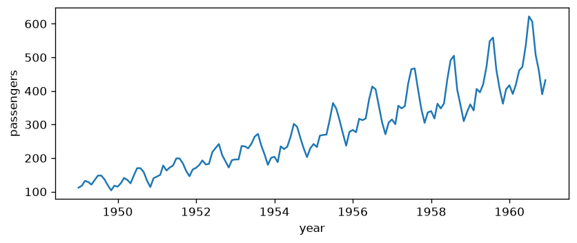
- 추세가 있다. 1949년에 100천 명대이던 승객 수가 1960년에는 400천 명에서 600천 명 안팎으로 늘었다.
- 계절성이 있다. 해마다 여름에 솟고 늦가을에 꺼지는 같은 무늬가 되풀이된다.
- 변동 폭이 커진다. 한 해 안에서 가장 높은 달과 가장 낮은 달의 차이가 뒤로 갈수록 벌어진다.
연도별 평균과 표준편차를 구하면 첫째와 셋째를 수로 확인할 수 있다.
print(air.groupby("year")["passengers"].agg(["mean", "std"]).round(1)) mean std
year
1949 126.7 13.7
1950 139.7 19.1
...
1959 428.3 69.8
1960 476.2 77.7- 확인 4 연도별 평균이 126.7(1949년)에서 476.2(1960년)로, 표준편차가 13.7에서 77.7로 커졌다.
평균이 해마다 커지므로 정상성의 첫째 조건에 어긋나고, 표준편차가 해마다 커지므로 둘째 조건에 어긋난다. AirPassengers는 비정상 시계열이다.
견주어 볼 백색잡음을 만든다. 평균 0, 표준편차 1인 정규 분포에서 서로 독립으로 144개를 뽑는다.
rng = np.random.default_rng(14) # 바꾸어 볼 값: 다른 시드 (예: 9)
wn = pd.Series(rng.normal(0, 1, 144), index=air.index)
print(round(wn.mean(), 3), round(wn.std(), 3))0.004 0.944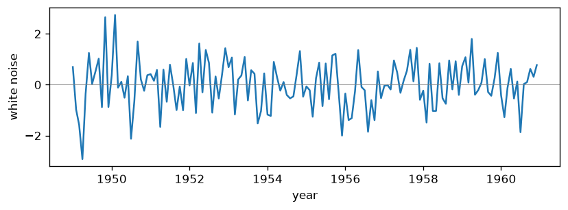
- 확인 5 백색잡음의 평균이 0.004, 표준편차가 0.944로 나왔고, 그림은 0을 중심으로 비슷한 폭 안에서 오르내린다.
항공 승객 수의 그림과 달리 오름세도, 되풀이되는 무늬도, 커지는 폭도 없다. 정상 시계열의 모양이다.
복기. 예상 (1)에서는 평균이 일정하다는 조건(오름세)과 분산이 일정하다는 조건(커지는 폭)이 깨졌다. 셋째 조건(공분산이 시차에만 의존)은 그림만으로 판단하기 어렵다. 3절의 자기상관 함수가 그것을 재는 도구다. 예상 (2)의 답은 평균 0.004, 표준편차 0.944였다. 이론값은 0과 1이지만, 144개의 표본에서는 이만큼 벗어난다. 백색잡음의 “평균 0, 분산 일정”은 모집단의 성질이며 표본의 값은 그 주위에서 흔들린다는 것을 기억한다. 시드를 9로 바꾸어 다시 실행하면 평균과 표준편차가 조금 다르게 나온다.
2. 분해 시계열
2.1 시계열의 성분
배경과 쓰임. 분해는 시계열을 읽는 첫 도구다. 1절의 배경에서 본 계절조정 계열은 분해에서 계절 성분만 걷어 낸 것이다. 가법 모형이면 관측값에서 계절 성분을 빼고, 승법 모형이면 관측값을 계절 성분으로 나눈다. FPP3의 3.2절은 실업률 같은 경제 지표가 계절 변동이 아닌 변동을 드러내려고 보통 계절조정되어 공표된다는 것과, 계절조정 계열에도 불규칙 성분이 남아 있어 매끄럽지 않으므로 경기의 전환점을 찾을 때에는 추세(추세-순환) 성분을 보라는 것을 함께 적는다. 업무에서는 매출처럼 달력에 매인 자료를 분해하여 “계절 때문에 늘어난 몫”과 “실제로 늘어난 몫”을 가른다. 중심 실습의 단계 1에서 항공 승객 수의 계절조정 계열을 직접 만든다.
분해 시계열은 시계열을 몇 가지 성분으로 나누어 분석하는 방법이다. 성분(요인)은 넷이다.
| 성분 | 뜻 | 예 |
|---|---|---|
| 추세 | 오랜 기간에 걸쳐 오르거나 내리는 흐름. 직선일 필요는 없다 | 항공 수요가 여러 해에 걸쳐 늘어난다 |
| 계절 | 달력에 매인 고정된 주기(한 해, 한 주 등)로 되풀이되는 변동 | 해마다 휴가철에 승객이 늘어난다 |
| 순환 | 주기가 고정되어 있지 않고 길게 오르내리는 변동. 경기 변동이 대표적이며 보통 2년 이상 이어진다 | 몇 해에 걸친 호황과 불황에 따라 승객이 늘고 준다 |
| 불규칙 | 위의 셋으로 설명되지 않는 우연한 변동 | 파업이나 악천후로 어느 달의 승객이 준다 |
계절 성분과 순환 성분은 둘 다 되풀이되는 변동이어서 혼동하기 쉽다. 주기가 고정되어 있고 미리 알려져 있으면 계절 성분이고, 주기가 일정하지 않으면 순환 성분이다. 순환의 주기는 평균적으로 계절의 주기보다 길다.
순환 성분은 자료의 기간이 짧으면 추세와 가려내기 어려워서 흔히 추세에 묶어 “추세-순환”으로 다룬다. 이 장에서 쓰는 분해 함수도 추세, 계절, 불규칙의 세 성분으로 나눈다.
2.2 가법 모형과 승법 모형
성분을 합치는 방식에 따라 두 모형으로 나눈다.
가법 모형: 관측값 = 추세 + 계절 + 불규칙
승법 모형: 관측값 = 추세 × 계절 × 불규칙
| 구분 | 가법 모형 | 승법 모형 |
|---|---|---|
| 맞는 자료 | 계절 변동의 폭이 수준과 관계없이 일정하다 | 계절 변동의 폭이 수준에 비례하여 커지거나 작아진다 |
| 계절 성분의 단위 | 원래 자료의 단위. 0이 평균 수준이다 | 단위가 없는 비율. 1이 평균 수준이다 |
| 불규칙 성분 | 0을 중심으로 흩어진다 | 1을 중심으로 흩어진다 |
승법 모형의 양쪽에 로그를 씌우면 곱이 합으로 바뀌어 가법 모형이 된다. 로그 변환한 자료를 가법 모형으로 분해하는 것은 원래 자료를 승법 모형으로 분해하는 것과 같다. 로그 변환이 변동 폭을 고르게 만드는 까닭이 이것이다.
2.3 고전적 분해의 절차
R의 decompose()와 파이썬의 seasonal_decompose는 이동평균을 쓰는 고전적 분해를 한다. 승법 모형의 절차는 다음과 같다. 가법 모형에서는 나누는 자리에 빼기가 들어간다.
- 추세: 이동평균으로 구한다. 주기가 12처럼 짝수이면 그 달을 가운데에 두고 앞뒤 여섯 달까지 13개월의 값을 쓰되, 양 끝 달에는 절반의 가중치를 준다(중심화 12개월 이동평균). 처음 여섯 달과 마지막 여섯 달은 앞이나 뒤의 값이 모자라 추세를 구할 수 없다.
- 계절: 관측값을 추세로 나눈 값을 같은 달끼리 평균한다. 열두 값의 평균이 1이 되도록 맞추고, 그 열두 값을 해마다 되풀이한다.
- 불규칙: 관측값을 추세와 계절 성분의 곱으로 나눈 나머지다. 추세가 없는 처음과 마지막 여섯 달은 불규칙 성분도 없다.
고전적 분해는 계절 무늬가 해마다 똑같다고 가정하고, 이상값에 약하다. 더 정교한 분해 방법(R의 stl() 등)도 있으나 시험 범위는 고전적 분해의 성분과 모형이다.
2.4 이동평균법과 지수평활법
불규칙한 변동을 고르게 하여 시계열의 흐름을 드러내는 방법을 평활법이라 한다. 다음 둘이 대표적이다.
| 구분 | 이동평균법 | 지수평활법 |
|---|---|---|
| 계산 | 일정한 기간(예: 최근 석 달)의 값을 평균한다. 기간을 한 칸씩 옮겨 가며 되풀이한다 | 지금까지의 모든 값을 가중 평균한다 |
| 가중치 | 기간 안의 모든 값에 같은 가중치를 준다 | 최근의 값에 큰 가중치를 주고, 과거로 갈수록 가중치가 지수적으로 작아진다 |
| 조절하는 값 | 평균을 내는 기간. 길수록 매끄럽지만 최근의 변화에 둔하게 반응한다 | 평활 상수(0과 1 사이). 클수록 최근의 값을 크게 반영한다 |
지수평활법(단순 지수평활법)은 다음 식을 시점마다 되풀이한다.
새 평활값 = 평활 상수 × 이번 관측값 + (1 - 평활 상수) × 직전의 평활값
식을 거꾸로 풀어 쓰면 가중치가 평활 상수 a에 대하여 a, a(1 - a), a(1 - a)², …의 순서로 줄어든다. 평활 상수가 1이면 이번 관측값만 남고, 0에 가까우면 먼 과거의 값까지 고르게 반영되어 매끄러워진다.
평활 상수 0.5이면 가중치는 0.5, 0.25, 0.125, 0.0625, …로 이번 값과 직전 값 둘이 합하여 0.75를 차지한다. 평활 상수 0.2이면 0.2, 0.16, 0.128, 0.1024, 0.0819, 0.0655, …로 줄어드는 속도가 느려, 네 시점 전의 값이 0.0819, 다섯 시점 전의 값도 0.0655의 가중치를 받는다. 그래서 평활 상수가 작을수록 우연한 오르내림이 많이 걸러지는 대신, 수준이 실제로 바뀌었을 때 따라가는 데 시간이 걸린다. 실제 분석에서는 평활 상수를 분석자가 감으로 정하지 않고, 한 시점 앞을 예측한 값과 실제 값의 차이(한 단계 예측 오차)의 제곱합이 가장 작아지는 값을 자료에서 추정한다(FPP3 8.1절). 이 과목의 따라 하기에서는 평활 상수를 정해 두고 그 뜻만 확인한다.
이동평균법은 4절의 이동평균 모형(MA)과 이름이 비슷하지만 다른 것이다. 이동평균법은 관측값을 평균하여 지난 흐름(추세)을 구하는 계산 방법이고, 이동평균 모형은 오차의 결합으로 시계열을 설명하는 모형이다.
따라 하기
노트북의 「따라 하기 2. 분해 시계열의 성분과 평활」 셀을 실행한다.
예상. (1) 한 해 안에서 가장 많은 달과 가장 적은 달의 차이(range)는 해마다 어떻게 변하겠는가. 비(ratio)는 어떻게 변하겠는가. 둘 가운데 하나가 거의 일정하다면 가법과 승법 가운데 어느 모형이 맞겠는가. (2) 3개월 이동평균의 첫 두 달 값은 무엇으로 나오겠는가.
먼저 해마다 가장 적은 달(min)과 가장 많은 달(max)의 승객 수, 그 차이(range)와 비(ratio)를 견준다.
yr = air.groupby("year")["passengers"].agg(["min", "max"])
yr["range"] = yr["max"] - yr["min"]
yr["ratio"] = (yr["max"] / yr["min"]).round(2)
print(yr.iloc[[0, 3, 6, 9, 11]]) min max range ratio
year
1949 104 148 44 1.42
1952 171 242 71 1.42
1955 233 364 131 1.56
1958 310 505 195 1.63
1960 390 622 232 1.59- 확인 6 한 해 안의 차이(
range)는 44에서 232로 다섯 배 넘게 커졌으나, 비(ratio)는 1.42에서 1.63 사이에 머문다.
계절에 따른 오르내림이 일정한 양이 아니라 일정한 비율로 일어난다는 뜻이다. 계절 변동의 폭이 수준에 비례하므로 2.2절의 기준으로 승법 모형이 맞다.
다음 셀은 2.3절의 중심화 12개월 이동평균으로 1949년 7월의 추세를 손으로 계산한다. 1949년 1월(112)과 1950년 1월(115)에는 절반의 가중치를, 그 사이의 열한 달에는 온전한 가중치를 준다.
trend_jul = (0.5 * y.iloc[0] + y.iloc[1:12].sum() + 0.5 * y.iloc[12]) / 12 # 1949년 1월~1950년 1월
print(round(trend_jul, 4))126.7917- 확인 7 1949년 7월의 추세가 126.7917로 나왔다. 중심 실습 단계 1의 분해 결과에서 같은 값을 다시 확인한다.
이어서 처음 여섯 달에 3개월 이동평균(ma3)과 평활 상수 0.5의 지수평활(ses)을 적용한다.
alpha = 0.5 # 바꾸어 볼 값: 0.2, 0.8
smooth = pd.DataFrame({"y": y.head(6), "ma3": y.head(6).rolling(3).mean(), "ses": y.head(6).ewm(alpha=alpha, adjust=False).mean()})
print(smooth.round(2)) y ma3 ses
1949-01-01 112 NaN 112.00
1949-02-01 118 NaN 115.00
1949-03-01 132 120.67 123.50
1949-04-01 129 126.33 126.25
1949-05-01 121 127.33 123.62
1949-06-01 135 128.33 129.313월의 ma3는 (112 + 118 + 132) ÷ 3 ≈ 120.67이다. 앞의 두 달은 석 달이 모자라 값이 없다. 지수평활은 첫 값(112)에서 출발하며, 2월의 값은 0.5 × 118 + 0.5 × 112 = 115.00이다.
- 확인 8 3월의 3개월 이동평균이 120.67, 2월의 지수평활값이 115.00으로 나왔다.
alpha를 0.8로 바꾸어 다시 실행하면 ses가 관측값 y를 더 바짝 따라가고, 0.2로 바꾸면 더 매끄러워진다.
복기. 예상 (1)의 결과는 차이가 44에서 232로 커지고 비가 1.42~1.63에 머무는 것이었다. “차이가 커지면 승법”이 아니라 “차이는 커지되 비가 일정하면 승법”이라는 것이 판단의 근거다. 차이도 비도 함께 커진다면 계절 변동이 수준보다 빠르게 커지는 것이므로 두 모형 모두 잘 맞지 않는다. 예상 (2)의 답은 NaN이었다. 평균을 낼 석 달이 모이지 않은 자리에는 값이 없다. 같은 까닭으로 중심화 12개월 이동평균으로 구한 추세는 처음과 마지막 여섯 달이 비며, 이 빈자리가 단계 1의 표에서 다시 나온다.
3. 차분과 자기상관 함수
3.1 차분의 계산
값이 10, 13, 12, 17, 21인 시계열을 1차 차분하면 3, -1, 5, 4가 된다. 13 - 10 = 3, 12 - 13 = -1과 같이 각 값에서 바로 앞의 값을 뺀다. 분기별 자료의 계절 차분은 각 값에서 4분기 앞의 값을 빼므로, 2년치 8개의 값에서 4개가 남는다.
3.2 자기상관 함수와 부분자기상관 함수
배경과 쓰임. 자기상관은 시계열의 “기억”을 재는 값이다. NIST 통계 공학 편람(6.4.4.6절)은 Box-Jenkins 방법에서 모형을 식별하는 주된 도구로 자기상관 그림과 부분자기상관 그림을 들고, 그림에서 정상성과 계절성을 먼저 판단한 뒤 차수를 고르는 순서를 제시한다. 자기상관은 모형을 고를 때만이 아니라 모형을 다 만든 뒤에도 쓴다. 모형이 자료의 규칙을 남김없이 설명했다면 잔차에는 자기상관이 없어야 하므로, 잔차의 자기상관 그림과 융-박스 검정(4.5절)으로 모형을 진단한다. 회귀 분석에서 시간 순서로 모은 자료의 잔차에 자기상관이 있으면 7장의 더빈-왓슨 통계량이 2에서 멀어지는 것도 “가까운 시점의 값끼리 닮는다”는 같은 성질을 다른 자리에서 본 것이다.
그림을 눈으로 보는 것만으로는 판단이 사람마다 다를 수 있다. 시계열이 과거의 값과 얼마나 닮았는지를 수로 재는 것이 자기상관이다.
| 용어 | 뜻 |
|---|---|
| 시차 | 두 시점이 떨어진 칸 수. 월별 자료에서 시차 1은 한 달, 시차 12는 한 해다 |
| 자기상관 | 한 시계열의 값과, 같은 시계열의 k 시점 전 값 사이의 상관 계수. 7장의 상관 계수를 두 변수가 아니라 한 변수의 현재와 과거에 적용한 것이다 |
| 자기상관 함수(ACF) | 시차 1, 2, 3, …의 자기상관을 차례로 늘어놓은 것. 시차 0의 값은 자기 자신과의 상관이므로 언제나 1이다 |
| 부분자기상관 함수(PACF) | 시차 k만큼 떨어진 두 값 사이에 낀 시차 1, 2, …, k - 1의 영향을 없앤 뒤의 상관을 시차별로 늘어놓은 것. 시차 1에서는 사이에 낀 값이 없으므로 ACF와 같다 |
두 함수의 차이는 다음 예로 이해한다. 이번 달의 값이 두 달 전의 값과 닮았다고 하자. 그것은 이번 달이 지난달과 닮고 지난달이 두 달 전과 닮아서 생긴 결과일 수 있다. ACF의 시차 2는 이렇게 지난달을 거쳐 전해진 닮음까지 모두 센다. PACF의 시차 2는 지난달을 거친 몫을 덜어 내고, 이번 달과 두 달 전이 직접 이어진 정도만 센다.
자기상관은 다음 순서로 계산한다. 7장의 상관 계수와 다른 점은 평균과 분모를 시계열 전체에서 한 번만 구한다는 것이다.
- 시계열 전체의 평균을 구하고, 값마다 평균을 뺀 편차를 구한다.
- 분모는 편차의 제곱을 모두 더한 값이다.
- 시차 k의 분자는 k칸 떨어진 두 편차를 곱한 값을 모두 더한 것이다. 자료가 n개이면 짝은 n - k개다.
- 분자를 분모로 나눈다.
3.1절의 수열 10, 13, 12, 17, 21로 해 보면, 평균은 14.6이고 편차는 -4.6, -1.6, -2.6, 2.4, 6.4다. 분모는 21.16 + 2.56 + 6.76 + 5.76 + 40.96 = 77.2다. 시차 1의 분자는 (-4.6)(-1.6) + (-1.6)(-2.6) + (-2.6)(2.4) + (2.4)(6.4) = 7.36 + 4.16 - 6.24 + 15.36 = 20.64이므로 시차 1의 자기상관은 20.64 ÷ 77.2 ≈ 0.267이다. 시차 2의 분자는 11.96 - 3.84 - 16.64 = -8.52이므로 -8.52 ÷ 77.2 ≈ -0.110이다. 짝의 수가 줄어도 분모를 그대로 두므로, 시차가 커질수록 자기상관의 크기는 0 쪽으로 작아지는 경향이 있다. 따라 하기 3에서 이 값을 acf()로 확인한다.
3.3 자기상관 그림과 판단 기준
ACF와 PACF를 막대로 그린 것이 자기상관 그림(코렐로그램)이다. 가로축이 시차이고 막대의 높이가 그 시차의 값이다. 그림에는 0을 가운데 둔 띠가 함께 그려진다. 실제 자기상관이 0이어도 표본에서 구한 값은 우연히 0에서 조금 벗어나는데, 띠는 그 범위를 나타낸다.
- R의
acf()는 백색잡음을 가정한 한계 ±1.96 ÷ √(자료의 수)를 파선으로 긋는다. 모든 시차에서 같은 높이다. - 파이썬의
plot_acf는 기본으로 Bartlett의 식을 써서, 앞 시차의 자기상관이 클수록 뒤 시차의 띠를 넓힌다.
막대가 띠 밖으로 나오면 그 시차의 자기상관이 0이 아니라고 본다. 유의수준 0.05의 띠이므로, 자기상관이 실제로 0이어도 스무 개의 막대 가운데 하나쯤은 우연히 띠 밖으로 나올 수 있다.
ACF의 모양으로 정상성을 판단하는 기준은 다음과 같다.
| ACF의 모양 | 판단 | 할 일 |
|---|---|---|
| 아주 천천히 줄어든다. 시차 1의 값이 크고 양수다 | 추세가 있는 비정상 시계열이다 | 일반 차분을 한다 |
| 계절 주기의 배수(12, 24, 36)에서 높은 막대가 되풀이된다 | 계절성이 있다 | 계절 차분을 한다 |
| 빠르게 0에 가까워진다 | 정상 시계열로 본다 | 4절의 모형을 적합한다 |
| 시차 1부터 모두 띠 안에 있다 | 백색잡음에 가깝다 | 찾을 규칙이 없다 |
따라 하기
노트북의 「따라 하기 3. 차분과 자기상관 함수」 셀을 실행한다.
예상. (1) 1, 2, 3, …, 144처럼 한결같이 오르기만 하는 수열의 시차 1 자기상관은 0에 가깝겠는가, 1에 가깝겠는가. 시차 5에서는 어떻겠는가. (2) 백색잡음 144개의 자기상관은 시차 1~5에서 한계 1.96 ÷ √144 안에 모두 들어오겠는가.
먼저 3.1절의 차분을 계산한다.
s = pd.Series([10, 13, 12, 17, 21])
print(s.diff().tolist())
q = pd.Series([20, 30, 25, 40, 22, 33, 27, 44]) # 2년 동안의 분기별 값
print(q.diff(4).dropna().tolist())[nan, 3.0, -1.0, 5.0, 4.0]
[2.0, 3.0, 2.0, 4.0]nan은 뺄 상대가 없어 값이 없다는 표시다.
이어지는 셀은 같은 수열 s의 자기상관을 시차 2까지 구한다(acf(s, nlags=2)). 출력은 다음과 같다.
[ 1. 0.267 -0.11 ]첫 값은 시차 0의 자기상관 1이고, 둘째와 셋째 값이 3.2절에서 손으로 계산한 0.267과 -0.110이다. 출력은 끝자리의 0을 적지 않아 -0.11로 보인다.
- 확인 9 1차 차분이
[nan, 3.0, -1.0, 5.0, 4.0]으로 손 계산과 같고, 분기별 값의 계절 차분은 22 - 20 = 2부터 시작하는 네 값[2.0, 3.0, 2.0, 4.0]이다. 수열s의 자기상관이 시차 1에서 0.267, 시차 2에서 -0.11로 3.2절의 손 계산과 같다.
다음으로 추세만 있는 시계열(1, 2, 3, …, 144)과 따라 하기 1의 백색잡음의 자기상관을 시차 5까지 견준다.
trend_only = pd.Series(np.arange(1, 145))
print(pd.DataFrame({"trend": acf(trend_only, nlags=5), "noise": acf(wn, nlags=5)}).round(3))
print(round(1.96 / np.sqrt(144), 3)) trend noise
0 1.000 1.000
1 0.979 -0.033
2 0.958 0.041
3 0.938 -0.009
4 0.917 -0.051
5 0.896 -0.038
0.163- 확인 10 추세만 있는 시계열의 ACF는 시차 1에서 0.979이고 시차 5에서도 0.896으로 천천히 줄어든다. 백색잡음의 ACF는 시차 1~5에서 절댓값이 모두 한계 0.163보다 작다.
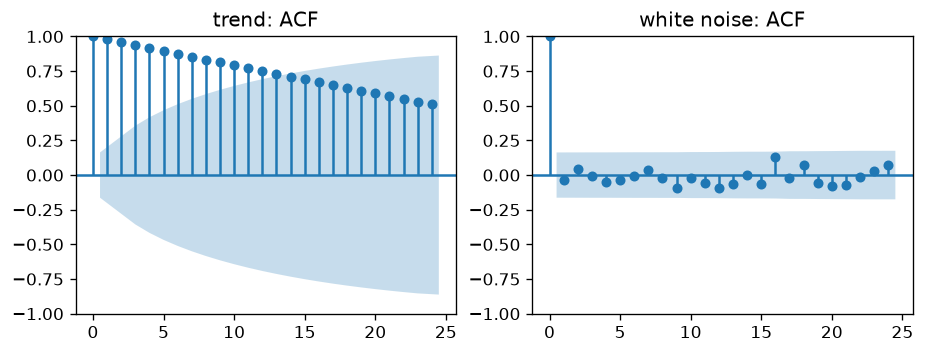
- 확인 11 그림의 왼쪽은 막대가 시차 24까지 모두 양수이고, 오른쪽은 시차 0을 뺀 막대가 모두 띠 안에 있다.
3.3절의 표에서 첫째 줄과 넷째 줄의 모양이다.
복기. 예상 (1)의 답은 시차 1에서 0.979, 시차 5에서 0.896이었다. 오르기만 하는 수열에서는 어느 시점의 값이 크면 몇 칸 앞의 값도 크므로, 시차가 커져도 상관이 거의 줄지 않는다. 추세가 있는 시계열의 ACF가 “아주 천천히 줄어드는” 까닭이 이것이다. 이 막대들은 추세가 만든 것이지 예측에 쓸 수 있는 닮음이 아니므로, 차분으로 추세를 없앤 뒤에 자기상관을 다시 본다. 예상 (2)의 답은 “모두 들어온다”였다(절댓값 최대 0.051, 한계 0.163). 다만 시차를 24까지 늘리면 스무 개 가운데 하나쯤은 우연히 띠 밖으로 나올 수 있다는 것을 3.3절에서 보았다.
4. 시계열 모형
배경과 쓰임. 이 절의 모형들은 Box와 Jenkins가 정리한 방법(4.5절)의 중심이다. FPP3는 ARIMA 모형을 지수평활과 함께 가장 널리 쓰이는 두 예측 방법으로 다룬다. 1절의 배경에서 본 X-13ARIMA-SEATS라는 이름에도 ARIMA가 들어 있다. 그 일부인 SEATS는 “ARIMA 시계열에서의 계절 추출(Seasonal Extraction in ARIMA Time Series)”의 머리글자이며, ARIMA 모형에 바탕을 두고 계절 성분을 뽑는다(FPP3 3.5절). 업무에서는 수요 예측 같은 단기 예측에 쓰이며, 계절이 있는 월별 자료에는 계절 ARIMA 모형을 쓴다(6.5절). 시험은 모형의 계산이 아니라 표기(p, d, q)의 뜻과, 자기상관 그림으로 모형의 종류를 고르는 판단을 묻는다.
정상 시계열에 적합하는 모형은 자기회귀 모형, 이동평균 모형, 그리고 둘을 합친 ARMA 모형이다. 차분까지 모형에 넣은 것이 ARIMA 모형이다.
4.1 자기회귀 모형
자기회귀 모형은 현재의 값을 자기 자신의 과거 값으로 설명한다. AR(p)로 적으며 p는 몇 시점 전의 값까지 쓰는가를 나타낸다.
AR(1): 현재 값 = 상수 + 계수 × (한 시점 전의 값) + 오차
AR(2): 현재 값 = 상수 + 계수₁ × (한 시점 전의 값) + 계수₂ × (두 시점 전의 값) + 오차
7장의 회귀 모형에서 독립 변수의 자리에 같은 변수의 과거 값을 넣은 것이다. 이름의 “자기”가 그 뜻이다. 오차는 백색잡음이다.
4.2 이동평균 모형
이동평균 모형은 현재의 값을 현재와 과거의 오차로 설명한다. MA(q)로 적으며 q는 몇 시점 전의 오차까지 쓰는가를 나타낸다.
MA(1): 현재 값 = 평균 + 현재의 오차 + 계수 × (한 시점 전의 오차)
MA(2): 현재 값 = 평균 + 현재의 오차 + 계수₁ × (한 시점 전의 오차) + 계수₂ × (두 시점 전의 오차)
AR 모형과 다른 점은 과거의 값이 아니라 과거의 오차가 식에 들어간다는 것이다. 어느 시점에 생긴 충격이 q 시점 뒤까지만 영향을 주고 사라진다. 이동평균 모형은 백색잡음 몇 개를 정해진 계수로 더한 것이므로, 계수가 어떤 값이든 평균과 분산(MA(1)이면 (1 + 계수²) × 오차의 분산)이 시점에 따라 변하지 않아 정상성을 만족한다. AR 모형은 계수가 일정한 범위에 있을 때에만 정상성을 만족한다.
4.3 ARMA 모형과 ARIMA 모형
ARMA(p, q)는 AR(p)와 MA(q)를 합친 모형이다. 현재의 값을 과거 p 시점의 값과 과거 q 시점의 오차로 함께 설명한다. AR, MA, ARMA는 정상 시계열의 모형이다. 비정상 시계열은 차분하여 정상 시계열로 바꾼 뒤에 이 모형을 적합하며, 이 과정을 하나의 표기에 담은 것이 ARIMA(p, d, q)다.
| 자리 | 이름 | 뜻 |
|---|---|---|
| p | AR의 차수 | 과거 몇 시점의 값까지 쓰는가 |
| d | 차분의 횟수 | 정상 시계열이 될 때까지 차분한 횟수 |
| q | MA의 차수 | 과거 몇 시점의 오차까지 쓰는가 |
ARIMA(p, d, q)는 d번 차분하면 ARMA(p, q)를 따르는 시계열의 모형이다.
| 표기 | 뜻 |
|---|---|
| ARIMA(1, 0, 0) | 차분하지 않는다. AR(1)과 같다 |
| ARIMA(0, 0, 2) | 차분하지 않는다. MA(2)와 같다 |
| ARIMA(1, 0, 1) | 차분하지 않는다. ARMA(1, 1)과 같다 |
| ARIMA(1, 1, 0) | 한 번 차분하면 AR(1)을 따른다 |
| ARIMA(0, 1, 1) | 한 번 차분하면 MA(1)을 따른다 |
| ARIMA(2, 1, 1) | 한 번 차분하면 ARMA(2, 1)을 따른다 |
d가 0이면 정상 시계열의 모형이고, d가 1 이상이면 비정상 시계열의 모형이다. 계절성이 있는 자료에는 계절 주기에 대한 차수 셋을 더 붙인 계절 ARIMA 모형을 쓴다. 6.5절에서 읽는 모형이 그것이다.
4.4 자기상관 그림에 의한 모형의 구분
정상 시계열이 어느 모형을 따르는지는 ACF와 PACF의 모양으로 짐작한다. 시험은 이 표를 묻는다.
| 모형 | ACF | PACF |
|---|---|---|
| AR(p) | 서서히 줄어든다 | p 시차 뒤에 끊긴다 |
| MA(q) | q 시차 뒤에 끊긴다 | 서서히 줄어든다 |
| ARMA(p, q) | 서서히 줄어든다 | 서서히 줄어든다 |
“끊긴다”는 그 시차까지는 막대가 띠 밖으로 나오고 그다음 시차부터는 모두 띠 안에 있다는 뜻이며, 절단이라고도 한다. “서서히 줄어든다”는 막대가 시차를 따라 지수적으로 낮아지며 0에 다가간다는 뜻이고, 부호가 번갈아 바뀌거나 물결 모양으로 줄어들기도 한다. ARMA는 두 그림이 모두 서서히 줄어들어 그림만으로 p와 q를 정하기 어렵다. 그때에는 후보 모형 여럿을 적합하여 AIC로 견준다(4.5절).
FPP3의 9.5절은 같은 규칙을 다음과 같이 적는다. 차분한 자료의 ACF가 지수적으로 줄거나 물결 모양이고 PACF가 시차 p에서 뚜렷하게 솟은 뒤 그 너머에는 없으면 AR(p)를, PACF가 지수적으로 줄거나 물결 모양이고 ACF가 시차 q에서 솟은 뒤 그 너머에는 없으면 MA(q)를 생각한다. 그리고 p와 q가 모두 0보다 크면 이 그림들은 차수를 정하는 데 도움이 되지 않는다고 덧붙인다. ARMA를 그림만으로 정하지 않고 AIC로 견주는 까닭이다(따라 하기 4).
[그림 자리: ACF와 PACF로 모형을 고르는 판단의 흐름도] 위에서 아래로 내려가는 판단 상자를 그린다. 첫 상자 “ACF가 아주 천천히 줄어드는가?” → 예: “차분한다(d를 하나 늘린다)” → 다시 첫 상자로. 아니오 → “ACF가 q 뒤에 끊기고 PACF는 서서히 주는가?” → 예: “MA(q)”. 아니오 → “PACF가 p 뒤에 끊기고 ACF는 서서히 주는가?” → 예: “AR(p)”. 아니오 → “둘 다 서서히 준다: ARMA. 후보 여럿을 적합하여 AIC로 고른다”. 마지막에 “잔차의 ACF와 융-박스 검정으로 진단” 상자를 둔다. 발표 자료 도구로 그린다. 그림 안의 글자는 영문 약어(ACF, PACF, AR, MA, ARMA, AIC)와 짧은 영어 낱말로 쓴다.
AR 모형의 차수는 PACF에서, MA 모형의 차수는 ACF에서 읽는다고 기억한다. AR(p)에서 현재 값과 직접 이어진 과거 값은 p 시점 전까지뿐이므로, 사이의 영향을 덜어 낸 PACF가 p 뒤에 끊긴다. MA(q)에서는 오차의 영향이 q 시점 뒤에 사라지므로 ACF가 q 뒤에 끊긴다.
4.5 모형 적합의 절차와 계수의 유의성
시계열 모형은 다음 순서로 정한다(Box-Jenkins 방법).
- 식별: 시계열 그림과 자기상관 그림으로 정상성을 확인한다. 정상 시계열이 아니면 변환과 차분을 한다(d가 정해진다). 정상 시계열이 되면 ACF와 PACF의 모양으로 p와 q의 후보를 고른다.
- 추정: 고른 모형의 계수를 추정한다.
- 진단: 잔차가 백색잡음인지 확인한다. 잔차의 자기상관 그림에서 막대가 모두 띠 안에 있으면 된다. 후보가 여럿이면 AIC가 작은 모형을 고른다.
- 예측: 진단을 통과한 모형으로 앞날의 값을 예측한다.
추정한 계수가 0과 다른지는 추정값을 표준 오차로 나눈 값으로 판단한다. 표본이 크면 이 비는 표준 정규 분포를 따른다고 보므로, 절댓값이 1.96(대략 2)보다 크면 유의수준 0.05에서 계수가 유의하다. 7장의 회귀 결과표에서 t 값을 읽은 것과 같은 생각이다.
[선택] 진단 단계에서는 잔차의 자기상관 그림과 함께 융-박스(Ljung-Box) 검정을 쓴다. 이 검정은 “잔차의 자기상관이 시차 1부터 정한 시차까지 모두 0이다(잔차가 백색잡음이다)”를 귀무 가설로 두고, 여러 시차의 자기상관을 한꺼번에 모은 통계량 Q*를 카이제곱 분포에 견준다(FPP3 5.4절). 판단은 6장의 가설 검정과 같다.
- 유의 확률이 0.05보다 크면 귀무 가설을 기각하지 못한다. 잔차가 백색잡음과 구별되지 않으므로 모형이 규칙을 거의 다 설명했다고 본다. 진단을 통과한 것이다.
- 유의 확률이 0.05 이하이면 잔차에 자기상관이 남아 있다. 모형이 설명하지 못한 규칙이 있으므로 차수를 바꾸어 다시 적합한다.
FPP3는 검정에 넣을 시차로 계절이 없는 자료에는 10, 계절이 있는 자료에는 계절 주기의 두 배(월별이면 24)를 권한다. 여기서는 유의 확률이 클수록 좋은 결과라는 점이 이제까지의 검정과 반대처럼 보이므로 주의한다. 이 검정에서 바라는 것은 “자기상관이 남아 있지 않다”, 곧 귀무 가설이 기각되지 않는 것이다.
따라 하기
노트북의 「따라 하기 4. AR 모형과 MA 모형」 셀을 실행한다. 계수가 0.7인 AR(1) 모형과 MA(1) 모형에서 난수로 시계열을 300개씩 만들고, ACF와 PACF를 시차 4까지 본다.
예상. 표를 보기 전에 4.4절의 표로 답을 적는다. (1) AR(1)의 PACF는 어느 시차 뒤에 한계 0.113 안으로 들어오겠는가. (2) MA(1)의 ACF는 어느 시차 뒤에 들어오겠는가. (3) AR(1) 시계열에 AR(1) 모형을 적합하면 계수의 추정값은 정확히 0.7이 나오겠는가.
np.random.seed(7)
sim_ar = arma_generate_sample([1, -0.7], [1], 300) # AR(1): 현재 값 = 0.7 × 한 시점 전의 값 + 오차
sim_ma = arma_generate_sample([1], [1, 0.7], 300) # MA(1): 현재 값 = 오차 + 0.7 × 한 시점 전의 오차
table = pd.DataFrame({"AR_acf": acf(sim_ar, nlags=4), "AR_pacf": pacf(sim_ar, nlags=4),
"MA_acf": acf(sim_ma, nlags=4), "MA_pacf": pacf(sim_ma, nlags=4)})
print(table.round(3))
print(round(1.96 / np.sqrt(300), 3)) AR_acf AR_pacf MA_acf MA_pacf
0 1.000 1.000 1.000 1.000
1 0.658 0.660 0.442 0.443
2 0.428 -0.009 -0.071 -0.333
3 0.301 0.040 -0.023 0.234
4 0.195 -0.029 0.061 -0.089
0.113- 확인 12 AR(1)의 ACF는 0.658, 0.428, 0.301, 0.195로 서서히 줄고, PACF는 시차 2에서 -0.009로 한계 0.113 안에 들어온다.
- 확인 13 MA(1)의 ACF는 시차 2에서 -0.071로 한계 안에 들어오고, PACF는 -0.333, 0.234, -0.089로 부호를 바꾸며 줄어든다.
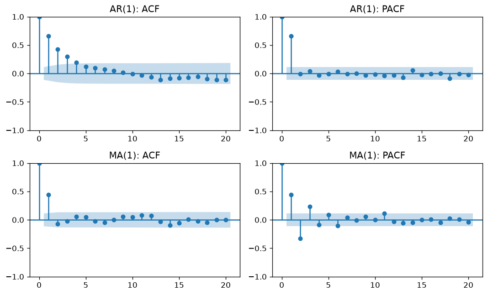
윗줄(AR(1))은 ACF가 서서히 낮아지고 PACF는 시차 1의 막대만 띠 밖에 있다. 아랫줄(MA(1))은 ACF가 시차 1 뒤에 끊기고 PACF가 부호를 바꾸며 줄어든다. 4.4절의 표 그대로다.
다음 셀은 AR(1)에서 만든 시계열에 ARIMA(1, 0, 0) 모형을 적합한다.
res = ARIMA(sim_ar, order=(1, 0, 0)).fit()
print(res.summary().tables[1])
print(round(res.aic, 2))==============================================================================
coef std err z P>|z| [0.025 0.975]
------------------------------------------------------------------------------
const -0.0592 0.164 -0.360 0.719 -0.381 0.263
ar.L1 0.6631 0.046 14.409 0.000 0.573 0.753
sigma2 0.9123 0.083 10.995 0.000 0.750 1.075
==============================================================================
830.4ar.L1이 AR(1)의 계수, const가 상수, sigma2가 오차의 분산이다. z는 추정값을 표준 오차로 나눈 값이고 P>|z|는 그 유의 확률이다.
- 확인 14
ar.L1의 추정값이 0.6631, 표준 오차가 0.046,z가 14.409, 유의 확률이 0.000으로 나왔다.
추정값 0.6631은 난수를 만든 계수 0.7에 가깝다. 표본이 300개뿐이어서 꼭 같지는 않다. z의 절댓값이 1.96보다 훨씬 크므로 계수는 유의하다. 상수는 z가 -0.360이고 유의 확률이 0.719이므로 0과 다르다고 할 수 없다. 6.5절의 R 출력에는 z와 유의 확률의 열이 없으므로 추정값과 표준 오차로 이 비를 직접 계산한다.
복기. 예상 (1)과 (2)는 4.4절의 표대로 시차 1이었다. AR(1)의 PACF는 시차 2에서 -0.009, MA(1)의 ACF는 시차 2에서 -0.071로 한계 안에 들었다. 예상 (3)의 답은 “아니다”였다. 0.6631은 300개의 표본으로 추정한 값이며, 95% 신뢰 구간 [0.573, 0.753]이 0.7을 포함한다. 표본에서 얻은 그림과 추정값은 이론의 모양 주위에서 흔들리므로, 막대 하나가 한계를 조금 넘거나 모자라는 것으로 결론을 바꾸지 않는다.
ARMA 모형의 식별과 AIC
AR과 MA의 모양은 한쪽 그림이 끊기므로 알아보기 쉽다. 두 그림이 모두 서서히 줄어드는 ARMA는 그렇지 않다. 다음 셀은 AR 계수 0.6, MA 계수 0.4인 ARMA(1, 1) 모형에서 300개를 만들고 ACF와 PACF를 시차 6까지 낸다.
예상. (1) 이 시계열의 ACF와 PACF 가운데 끊기는 것이 있겠는가. (2) 이 시계열에 후보 모형 AR(1), AR(2), MA(1), ARMA(1, 1)을 적합하면 AIC가 가장 작은 것은 무엇이겠는가. 둘째로 작은 것은 무엇이겠는가.
np.random.seed(11)
sim_arma = arma_generate_sample([1, -0.6], [1, 0.4], 300) # ARMA(1, 1)
print(pd.DataFrame({"acf": acf(sim_arma, nlags=6), "pacf": pacf(sim_arma, nlags=6)}).round(3)) acf pacf
0 1.000 1.000
1 0.734 0.736
2 0.391 -0.324
3 0.171 0.067
4 0.016 -0.128
5 -0.044 0.081
6 -0.053 -0.045- 확인 15 ACF가 0.734, 0.391, 0.171로 줄어 시차 4에서 0.016이 되고, PACF는 0.736, -0.324 다음에도 시차 4에서 -0.128로 한계 0.113을 넘는다.
ACF는 시차 3까지 한계를 넘다가 줄어들고, PACF는 시차 2에서 음수로 크게 내려간 뒤에도 시차 4에서 다시 한계를 넘는다. ACF만 보면 MA(3), PACF만 보면 AR(2)로 읽을 수도 있는 모양이다. FPP3가 말한 대로 그림만으로는 차수가 하나로 정해지지 않는다. 그래서 후보를 적합하여 AIC로 견준다.
for order in [(1, 0, 0), (2, 0, 0), (0, 0, 1), (1, 0, 1)]: # 바꾸어 볼 값: 다른 후보 (예: (0, 0, 2))
fit = ARIMA(sim_arma, order=order).fit()
print(order, round(fit.aic, 2))(1, 0, 0) 872.44
(2, 0, 0) 840.76
(0, 0, 1) 891.41
(1, 0, 1) 835.86- 확인 16 AIC가 가장 작은 모형이 ARIMA(1, 0, 1), 곧 ARMA(1, 1)(835.86)이고, 둘째가 AR(2)(840.76)이다.
AIC는 7장 3.6절에서 본 대로 모형이 자료에 맞는 정도에 모수의 수만큼 벌점을 준 값이며 작을수록 좋다. ARMA(1, 1)과 AR(2)는 모수의 수가 같고, ARMA(1, 1)이 4.90만큼 작다. 이 견줌은 같은 자료에 같은 차분(여기서는 차분 없음)을 한 모형끼리만 의미가 있다(FPP3 9.6절).
[선택] 잔차의 진단. AIC가 가장 작은 모형도 잔차가 백색잡음이 아니면 쓸 수 없다. 다음 셀은 AR(1)과 ARMA(1, 1)의 잔차에 4.5절의 융-박스 검정(시차 10)을 한다. 줄마다 모형, 검정 통계량, 유의 확률이다.
(1, 0, 0) 36.11 0.0001
(1, 0, 1) 4.33 0.9311- 확인 17 AR(1)의 잔차는 유의 확률이 0.0001로 0.05보다 작고, ARMA(1, 1)의 잔차는 0.9311로 0.05보다 크다.
AR(1)은 잔차에 자기상관이 남아 진단을 통과하지 못하고, ARMA(1, 1)은 통과한다. 그림(식별), AIC(비교), 잔차(진단)의 세 단계가 같은 결론을 낸다.
복기. 예상 (1)의 답은 “뚜렷하게 끊기는 것이 없다”였다. 예상 (2)에서 ARMA(1, 1)을 첫째로 골랐다면, 그것이 난수를 만든 모형이어서가 아니라 AIC가 가장 작아서 고른 것이라고 근거를 바꾸어 적는다. 실제 자료에서는 참인 모형을 모른다. 둘째인 AR(2)의 AIC가 가까웠다는 것도 적어 둔다. 두 모형의 AIC 차이가 작으면 더 단순한 모형이나 해석하기 쉬운 모형을 고르는 것도 합리적인 판단이다.
5. 중심 실습: 시계열 분해와 차분
AirPassengers를 추세, 계절, 불규칙 성분으로 분해하고, 로그 변환과 차분을 차례로 하면서 시계열 그림과 자기상관 그림이 어떻게 달라지는지 본다.
준비
- 실습 노트북에서 「따라 하기 1」의 셀이 실행되어 있는지 확인한다. 중심 실습은 그 셀이 만든
air와y를 쓴다. - 「중심 실습」의 셀을 위에서부터 차례로 실행하면서 아래의 단계를 따른다.
예상
셀을 실행하기 전에 노트에 다음 표를 옮기고 “예상” 칸을 채운다. “결과” 칸은 단계를 마칠 때마다 채우고 복기에서 견준다. 근거는 따라 하기 1~4의 결과에서 찾는다.
| 번호 | 물음 | 예상 | 결과 |
|---|---|---|---|
| 1 | 승법 모형의 계절 성분이 가장 큰 달과 가장 작은 달은 언제이겠는가 | ||
| 2 | 로그 변환 뒤 연도별 표준편차는 해마다 커지겠는가, 비슷하겠는가. 평균은 어떻겠는가 | ||
| 3 | 1차 차분만 한 시계열(diff1)의 ACF에서 높은 막대가 남는 시차는 어디이겠는가 |
||
| 4 | 1차 차분과 계절 차분을 모두 한 시계열(diff12)의 ACF에서 한계를 뚜렷하게 넘는 시차는 어디이겠는가 |
||
| 5 | diff12의 모양으로 고를 모형은 AR과 MA 가운데 어느 쪽이겠는가 |
- 확인 18 예상 표의 다섯 칸을 모두 채웠고, 칸마다 근거로 삼은 따라 하기의 결과를 하나씩 적었다.
절차
단계 1. 승법 모형으로 분해
model = "multiplicative"셀을 실행하여 분해 그림을 그린다.- 계절 성분의 첫 열두 달을 출력하는 셀을 실행한다.
- 관측값과 세 성분을 한 표에 놓는 셀을 실행한다.
seasonal_decompose의 model에 모형의 종류를 적고, period=12로 열두 달마다 같은 무늬가 되풀이된다는 것을 알려 준다. 따라 하기 2에서 비가 일정한 것을 보았으므로 승법 모형으로 분해한다.
model = "multiplicative" # 바꾸어 볼 값: "additive"
result = seasonal_decompose(y, model=model, period=12)
result.plot()
plt.show()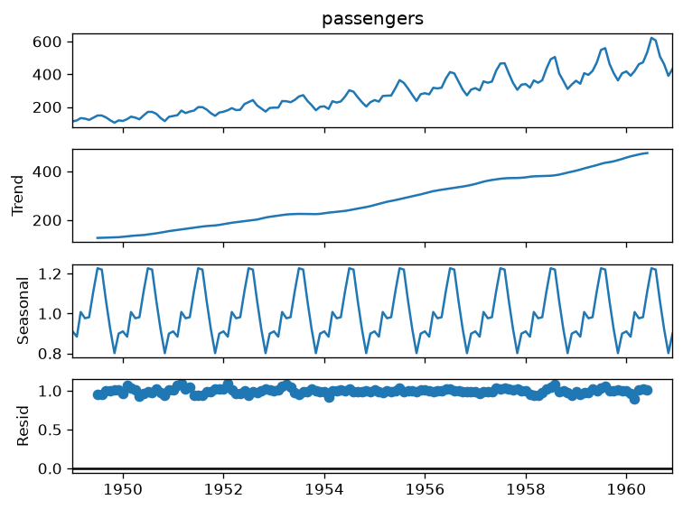
그림은 위에서부터 관측값, 추세(Trend), 계절(Seasonal), 불규칙(Resid)이다. 추세는 계절의 오르내림이 걷힌 매끄러운 오름세이고, 계절 성분은 0.8과 1.2 안팎을 오가는 같은 무늬가 해마다 되풀이되며, 불규칙 성분은 1 가까이에 모여 있다.
1949-01-01 0.9102
1949-02-01 0.8836
1949-03-01 1.0074
1949-04-01 0.9759
1949-05-01 0.9814
1949-06-01 1.1128
1949-07-01 1.2266
1949-08-01 1.2199
1949-09-01 1.0605
1949-10-01 0.9218
1949-11-01 0.8012
1949-12-01 0.8988
Freq: MS, Name: seasonal, dtype: float64승법 모형의 계절 성분은 비율이다. 7월의 1.2266은 7월의 승객 수가 추세보다 평균 22.66% 많다는 뜻이고, 11월의 0.8012는 추세보다 평균 20%쯤 적다는 뜻이다.
- 확인 19 계절 성분이 가장 큰 달은 7월(1.2266)이고 가장 작은 달은 11월(0.8012)이다.
observed trend seasonal resid
1949-01-01 112 NaN 0.9102 NaN
1949-02-01 118 NaN 0.8836 NaN
1949-03-01 132 NaN 1.0074 NaN
1949-04-01 129 NaN 0.9759 NaN
1949-05-01 121 NaN 0.9814 NaN
1949-06-01 135 NaN 1.1128 NaN
1949-07-01 148 126.7917 1.2266 0.9517
1949-08-01 148 127.2500 1.2199 0.9534
1949-09-01 136 127.9583 1.0605 1.0022
1949-10-01 119 128.5833 0.9218 1.0040
1949-11-01 104 129.0000 0.8012 1.0063
1949-12-01 118 129.7500 0.8988 1.0118추세의 첫 여섯 달은 NaN(값 없음)이다. 2.3절에서 본 대로 앞의 값이 모자라 이동평균을 구할 수 없고, 추세가 없으면 불규칙 성분도 구할 수 없다. 1949년 7월의 줄에서 세 성분을 곱하면 관측값이 나온다. 126.7917 × 1.2266 × 0.9517 ≈ 148.0
- 확인 20 1949년 7월의 추세가 따라 하기 2의 손 계산과 같은 126.7917이고, 세 성분의 곱이 관측값 148과 같다.
이어서 1절과 2절의 배경에서 본 계절조정 계열을 만든다. 승법 모형이므로 관측값을 계절 성분으로 나눈다. 다음 셀은 1949년 9~12월의 관측값, 계절 성분, 계절조정 값(adjusted)을 견준다.
adjusted = y / result.seasonal
print(pd.DataFrame({"observed": y, "seasonal": result.seasonal, "adjusted": adjusted}).iloc[8:12].round({"seasonal": 4, "adjusted": 1})) observed seasonal adjusted
1949-09-01 136 1.0605 128.2
1949-10-01 119 0.9218 129.1
1949-11-01 104 0.8012 129.8
1949-12-01 118 0.8988 131.3- 확인 21 1949년 10월과 11월의 관측값은 119에서 104로 줄었고, 계절조정 값은 129.1에서 129.8로 늘었다.
관측값만 보면 11월의 승객이 10월보다 15천 명 줄었다. 그러나 11월은 해마다 승객이 적은 달이다(계절 성분 0.8012). 계절의 몫을 걷어 낸 계절조정 값은 오히려 조금 늘었다. 통계 기관이 원계열의 전월 대비 변화가 아니라 계절조정 계열의 전월 대비 변화를 경기 판단에 쓰는 까닭이 이것이다. 반대로 원계열로 견줄 때에는 계절이 같은 작년 같은 달과 견준다(전년동월비). 1절의 최신 자료 자리에서 원지수는 전년동월비로, 계절조정지수는 전월비로 견주는 것이 이 이유에서다.
단계 2. 로그 변환
- 로그 변환하고 연도별 평균과 표준편차를 구하는 셀을 실행한다.
- 따라 하기 1의 표준편차와 견준다.
log_y = np.log(y)
air["log_passengers"] = log_y
print(air.groupby("year")["log_passengers"].agg(["mean", "std"]).round(3)) mean std
year
1949 4.836 0.108
1950 4.931 0.135
1951 5.131 0.108
1952 5.277 0.113
1953 5.409 0.127
1954 5.467 0.144
1955 5.639 0.144
1956 5.784 0.141
1957 5.898 0.152
1958 5.931 0.160
1959 6.048 0.157
1960 6.154 0.157로그는 큰 값일수록 더 많이 줄인다. 원래 자료의 표준편차는 13.7에서 77.7로 다섯 배 넘게 커졌으나, 로그를 씌운 뒤에는 0.108에서 0.160 사이에 머문다.
- 확인 22 로그 변환 뒤의 연도별 표준편차가 0.108에서 0.160 사이에 있고, 평균은 4.836에서 6.154로 여전히 커진다.
변동 폭은 고르게 되었으나 추세는 남아 있다. 다음 단계에서 차분으로 없앤다.
단계 3. 차분
- 1차 차분과 계절 차분을 하는 셀을 실행한다.
- 차분하기 전과 뒤의 시계열 그림을 그리는 셀을 실행한다.
diff1 = log_y.diff().dropna() # 1차 차분: 한 달 전의 값을 뺀다
diff12 = diff1.diff(12).dropna() # 계절 차분: 열두 달 전의 값을 뺀다
print(len(log_y), len(diff1), len(diff12))
print(log_y.head(4).round(4))
print(diff1.head(3).round(4))144 143 131
1949-01-01 4.7185
1949-02-01 4.7707
1949-03-01 4.8828
1949-04-01 4.8598
Freq: MS, Name: passengers, dtype: float64
1949-02-01 0.0522
1949-03-01 0.1121
1949-04-01 -0.0230
Freq: MS, Name: passengers, dtype: float64- 확인 23 자료의 수가 144, 143, 131로 줄었고,
diff1의 첫 값 0.0522가 4.7707 - 4.7185와 같다.
로그를 씌운 값의 차분에는 쓸모 있는 뜻이 하나 있다. 로그의 차는 비의 로그이므로, 0.0522는 log(118 ÷ 112)이고 118 ÷ 112 ≈ 1.054다. 변화가 작을 때 로그 차분은 변화율과 거의 같아서, 0.0522는 “1949년 2월의 승객이 1월보다 약 5.2% 늘었다”로 읽을 수 있다. 그러므로 diff1은 달마다의 증가율의 열이고, diff12는 그 증가율이 작년 같은 달의 증가율과 얼마나 다른가의 열이다. 경제 지표의 분석에서 로그 차분을 자주 쓰는 까닭이 이것이다. 원래 값을 그대로 차분하면 1949년의 6천 명 증가와 1960년의 6천 명 증가가 같은 크기로 다루어지지만, 로그 차분은 수준에 견준 비율로 다룬다.
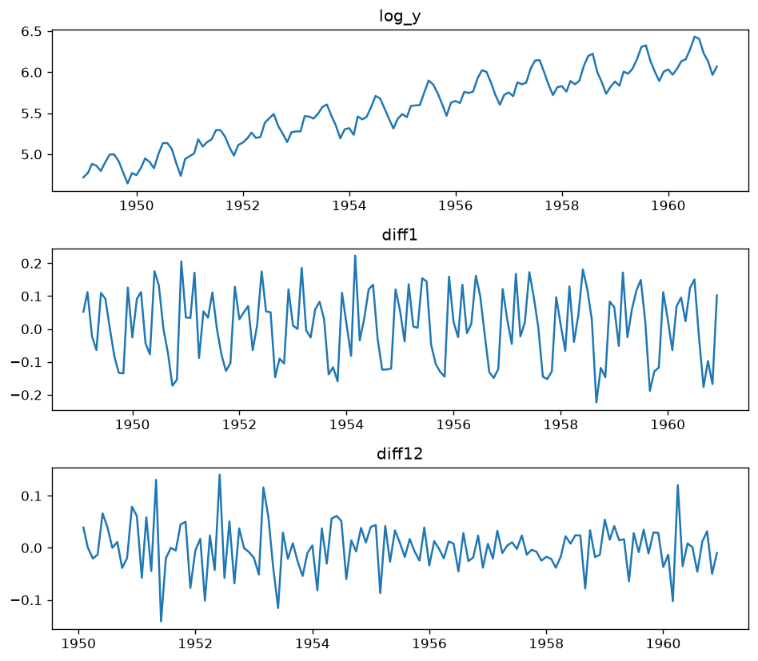
| 그림 | 읽을 것 |
|---|---|
log_y |
오름세(추세)와 해마다 되풀이되는 무늬(계절성)가 모두 있다. 변동 폭은 처음부터 끝까지 비슷하다 |
diff1 |
오름세가 사라지고 0을 중심으로 오르내린다. 해마다 같은 무늬는 그대로 남아 있다 |
diff12 |
되풀이되는 무늬도 사라졌다. 0을 중심으로 일정한 폭 안에서 불규칙하게 오르내린다 |
- 확인 24
diff12의 그림에 오름세와 해마다 되풀이되는 무늬가 보이지 않는다.
일반 차분이 추세를 없애고 계절 차분이 계절성을 없앤 것이다.
단계 4. 자기상관 그림
log_y,diff1,diff12의 자기상관 그림을 그리는 셀 셋을 차례로 실행한다.- 3.3절의 판단 기준표로 세 그림을 판정한다.
fig, axes = plt.subplots(1, 2, figsize=(9, 3)) # 그림 칸 둘을 옆으로 놓는다
plot_acf(log_y, lags=36, ax=axes[0])
plot_pacf(log_y, lags=36, ax=axes[1])
plt.show()차분하기 전 (log_y)
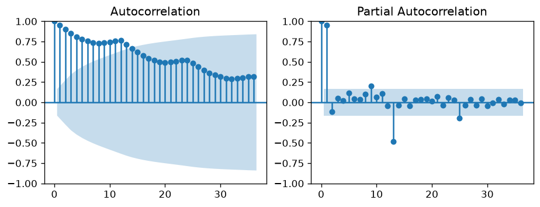
ACF의 막대가 시차 36까지 모두 양수이고 아주 천천히 낮아진다. 추세가 있는 비정상 시계열의 모양이다.
1차 차분을 한 뒤 (diff1)
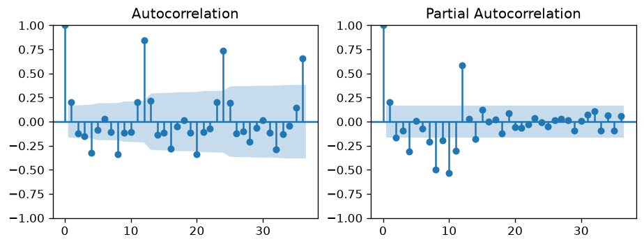
대부분의 막대가 낮아졌으나 시차 12, 24, 36에서 높은 막대가 솟는다. 계절성이 남아 있다.
계절 차분까지 한 뒤 (diff12)
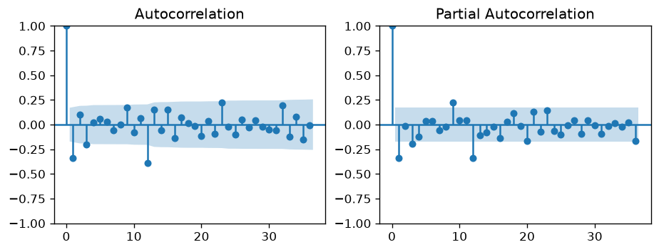
시차 1과 시차 12의 막대만 뚜렷하게 띠 밖으로 나오고 나머지는 대부분 띠 안에 있다. 자기상관이 빠르게 0에 가까워졌으므로 정상 시계열로 볼 수 있다.
- 확인 25 세 그림의 ACF가 차례로 “아주 천천히 줄어든다”, “시차 12, 24, 36에서 높다”, “시차 1과 12를 빼면 대부분 띠 안에 있다”의 모양이다.
단계 5. 자기상관의 값
- ACF의 표, PACF의 표,
diff12의 한계를 출력하는 셀을 차례로 실행한다. - 시차 1과 시차 12의 값을 표로 옮긴다.
acf_table = pd.DataFrame({"log_y": acf(log_y, nlags=12), "diff1": acf(diff1, nlags=12), "diff12": acf(diff12, nlags=12)})
print(acf_table.round(3)) log_y diff1 diff12
0 1.000 1.000 1.000
1 0.954 0.200 -0.341
2 0.899 -0.120 0.105
3 0.851 -0.151 -0.202
4 0.808 -0.322 0.021
5 0.779 -0.084 0.056
6 0.756 0.026 0.031
7 0.738 -0.111 -0.056
8 0.727 -0.337 -0.001
9 0.734 -0.116 0.176
10 0.744 -0.109 -0.076
11 0.758 0.206 0.064
12 0.762 0.841 -0.387| 시계열 | 시차 1 | 시차 12 | 판단 |
|---|---|---|---|
log_y |
0.954 | 0.762 | 시차가 커져도 값이 거의 줄지 않는다. 추세가 있다 |
diff1 |
0.200 | 0.841 | 시차 12에서 값이 크다. 계절성이 있다 |
diff12 |
-0.341 | -0.387 | 두 시차를 빼면 값이 작다. 정상 시계열에 가깝다 |
- 확인 26 시차 1의 자기상관이 0.954(
log_y), 0.200(diff1), -0.341(diff12)로 바뀌었다.
log_y diff1 diff12
0 1.000 1.000 1.000
1 0.954 0.200 -0.341
2 -0.118 -0.167 -0.013
3 0.054 -0.096 -0.193
...
12 -0.042 0.586 -0.339
131 0.171PACF의 시차 1의 값은 ACF와 같다. log_y의 PACF는 시차 2에서 -0.118로, 시차 1을 지나면 값이 훨씬 작다. ACF에서 시차 2 이후의 값이 컸던 것은 대부분 시차 1의 닮음이 이어져 전해진 것이었다는 뜻이다. 마지막 줄은 diff12의 자료 수 131과 한계 1.96 ÷ √131 ≈ 0.171이다.
- 확인 27
diff12의 한계가 0.171이고, ACF에서 이 한계를 넘는 시차는 1(-0.341), 3(-0.202), 9(0.176), 12(-0.387)다.
시차 1과 12는 한계를 크게 넘고, 3과 9는 조금 넘는다. 3.3절대로 우연히 띠를 조금 넘는 막대가 있을 수 있다. 시차 1과 계절 주기인 시차 12의 막대만 뚜렷하므로, 4.4절의 기준으로 한 달 간격으로도 열두 달 간격으로도 MA(1)의 모양이다. 6.5절의 R 코드가 이 모형을 적합한다. FPP3의 9.9절도 ACF가 시차 12에서만 솟고 다른 계절 시차에서는 뚜렷하지 않으면 계절 MA(1) 항을 생각하라고 설명한다.
단계 6. 계절 ARIMA 모형의 적합과 진단 [선택]
- 계절 ARIMA 모형을 적합하는 셀을 실행한다.
- 잔차에 융-박스 검정을 하는 셀을 실행한다.
단계 5에서 짐작한 모형을 로그 변환한 승객 수에 적합한다. order=(0, 1, 1)은 일반 차분 한 번과 MA(1), seasonal_order=(0, 1, 1, 12)는 계절 차분 한 번과 계절 MA(1)이며 마지막 12가 계절의 주기다. 6.5절의 R 코드와 같은 모형이다.
sfit = ARIMA(log_y, order=(0, 1, 1), seasonal_order=(0, 1, 1, 12)).fit()
print(sfit.params.round(4))
print(sfit.bse.round(4))
print(round(sfit.aic, 1))ma.L1 -0.4019
ma.S.L12 -0.5574
sigma2 0.0013
dtype: float64
ma.L1 0.0730
ma.S.L12 0.0963
sigma2 0.0001
dtype: float64
-483.4첫 묶음이 추정값, 둘째 묶음이 표준 오차다. ma.L1이 MA(1)의 계수, ma.S.L12가 계절 MA(1)의 계수다.
- 확인 28
ma.L1이 -0.4019,ma.S.L12가 -0.5574, AIC가 -483.4로 나왔다.
R의 arima()(6.5절)는 같은 모형에서 -0.4018과 -0.5569, AIC -483.4를 냈다. 계수는 넷째 자리에서 조금 다르고 AIC는 같다. 표준 오차는 R이 0.0896과 0.0731이고 statsmodels가 0.0730과 0.0963으로 차이가 더 크다. 두 프로그램은 같은 최대 가능도의 모형을 쓰지만 계산의 세부(초기값, 최적화 방법, 표준 오차를 구하는 방식)가 다르기 때문이다. 어느 쪽으로 계산해도 추정값 ÷ 표준 오차의 절댓값이 4를 넘으므로 두 계수가 유의하다는 결론은 같다.
다음 셀은 잔차를 진단한다. 차분 때문에 처음 13개월의 잔차는 의미가 없으므로 빼고, 월별 자료이므로 시차 12와 24에서 검정한다(4.5절).
lb = acorr_ljungbox(sfit.resid[13:], lags=[12, 24])
print(lb.round(4)) lb_stat lb_pvalue
12 8.4641 0.7479
24 23.6193 0.4835- 확인 29 융-박스 검정의 유의 확률이 시차 12에서 0.7479, 시차 24에서 0.4835로 모두 0.05보다 크다.
두 유의 확률이 0.05보다 크므로 잔차가 백색잡음과 구별되지 않는다. 이 모형은 Box-Jenkins 방법의 진단 단계를 통과하였다. 식별(단계 4, 5), 추정(이 단계의 첫 셀), 진단(이 단계의 둘째 셀)을 한 자료에서 차례로 한 것이다. 예측은 이 과목에서 다루지 않는다.
단계 7. 해석 문장의 작성
- 차분하기 전(
log_y)과 뒤(diff12)의 자기상관 그림의 차이를 시차 1의 자기상관 값을 넣어 한 문장으로 쓴다. - 그 차이가 정상성에 관해 무엇을 뜻하는지를 같은 문장이나 다음 문장에 쓴다.
예: “로그 변환한 승객 수의 ACF는 시차 1에서 0.954이고 아주 천천히 줄어들었으나, 1차 차분과 계절 차분을 한 뒤에는 시차 1에서 -0.341이고 시차 1과 12를 빼면 대부분 띠 안에 들어와, 차분으로 추세와 계절성이 없어져 정상 시계열에 가까워졌다.”
- 확인 30 해석 문장에 0.954와 -0.341이 들어 있고, “정상”이라는 용어로 결론을 적었다.
값을 바꾸어 보기
단계 1의 model 줄에서 "multiplicative"를 "additive"로 바꾸고, 단계 1의 셀 셋을 다시 실행한다.
- 계절 성분의 7월 값과 11월 값은 얼마인가. 승법 모형의 값(1.2266, 0.8012)과 단위가 어떻게 다른가.
- 1949년 7월의 추세, 계절, 불규칙 성분을 더한 값이 관측값 148과 같은지 확인한다.
- 불규칙 성분(
Resid)의 그림을 승법 모형일 때의 그림과 견준다. 가법 모형의 불규칙 성분은 어느 시기에 0에서 멀리 떨어지는가. 그 까닭을 2.2절과 따라 하기 2의range로 설명한다.
물음에 답한 뒤에는 model을 "multiplicative"로 되돌려 다시 실행한다. 따라 하기 2의 alpha, 따라 하기 1의 시드를 바꾸어 보아도 된다.
막힐 때
실습 중에 마주치는 증상과 조치다. 개념의 오해는 7절에 따로 모았다.
| 증상 | 원인 | 조치 |
|---|---|---|
ValueError가 나며 seasonal_decompose가 주기를 정하지 못한다고 한다 |
y의 행 이름이 날짜가 아닌 상태에서 period=12를 지웠다 |
0.2절의 첫 셀(date_range의 줄 포함)을 다시 실행하고 period=12를 둔다 |
| 계절 성분이 63.8308처럼 천 명 단위의 값으로 나온다 | model을 "additive"로 바꾼 채 되돌리지 않았다 |
"multiplicative"로 고치고 단계 1부터 다시 실행한다 |
NameError: name 'log_y' is not defined |
단계 2를 건너뛰고 단계 3을 실행하였다 | 단계 2의 셀부터 차례로 실행한다 |
| 단계 3의 자료의 수가 144, 143, 131이 아니다 | dropna()를 지웠거나 차분 셀을 두 번 실행하여 변수를 덮어썼다 |
단계 2와 3의 셀을 차례로 한 번씩 다시 실행한다 |
| 자기상관 그림 두 칸 가운데 한 칸이 비어 있다 | 셀의 일부만 선택하여 실행하였거나 ax=axes[1]을 고쳤다 |
셀 전체를 다시 실행한다 |
단계 6에서 ConvergenceWarning이나 UserWarning이 보인다 |
최적화가 끝까지 수렴하지 못했다는 경고다. 판에 따라 나타난다 | 출력된 계수가 교재와 넷째 자리 안에서 같으면 그대로 진행한다. 크게 다르면 교수에게 알린다 |
| 모의 시계열의 표가 교재와 다르다 | np.random.seed(...) 줄을 지웠거나 시드를 바꾸었다 |
시드를 교재의 값(7, 11)으로 되돌리고 그 셀부터 다시 실행한다 |
복기
예상 표의 “결과” 칸을 채우고 두 칸을 견준다. 결과는 다음과 같다.
| 번호 | 결과 | 견줄 점 |
|---|---|---|
| 1 | 7월(1.2266), 11월(0.8012) | 여름 휴가철에 많고 늦가을에 적다. 그림의 무늬와 같다 |
| 2 | 표준편차는 0.108~0.160으로 비슷하고, 평균은 4.836에서 6.154로 커진다 | 로그 변환은 분산만 고르게 하고 추세는 남긴다(1.3절의 짝) |
| 3 | 시차 12(0.841)와 그 배수 | 일반 차분은 추세만 없애고 계절성은 남긴다 |
| 4 | 시차 1(-0.341)과 시차 12(-0.387). 3과 9는 조금 넘는다 | 계절 차분까지 하자 대부분의 막대가 띠 안에 들었다 |
| 5 | MA. 일반 MA(1)과 계절 MA(1) | ACF가 시차 1과 12에서만 솟고 끊겼다. 단계 6([선택])의 진단을 통과하였다 |
0.3절의 질문에 답할 수 있다. 먼저 로그 변환으로 커지는 폭을 고르게 하고, 1차 차분으로 추세를, 계절 차분(12개월)으로 계절성을 걷어 냈다. 그 꼴이 되었다는 것은 ACF가 빠르게 0에 가까워져 대부분의 막대가 한계 0.171 안에 든 것으로 확인하였다. 예상과 결과가 달랐던 칸이 있으면, 근거로 삼은 따라 하기의 결과와 실제 결과가 어디서 어긋났는지를 한 줄 적는다. 예를 들어 3번에서 시차 1을 예상하였다면, 일반 차분이 계절성을 없앤다고 본 것이다.
- 확인 31 예상 표의 “결과” 칸을 모두 채웠고, 예상과 결과가 달랐던 칸에 그 까닭을 한 줄 적었다.
완료 기준
| 번호 | 점검 항목 | 점검 방법 | 기준 값 |
|---|---|---|---|
| 1 | 승법 모형의 분해 | 단계 1의 출력 | 7월 1.2266, 11월 0.8012, 1949년 7월의 추세 126.7917 |
| 2 | 로그 변환 | 단계 2의 출력 | 연도별 표준편차 0.108~0.160 |
| 3 | 차분 | 단계 3의 출력 | 자료의 수 144, 143, 131 |
| 4 | 자기상관 그림 | 단계 4의 그림 셋 | diff12의 ACF에서 시차 1과 12만 뚜렷하게 띠 밖 |
| 5 | 자기상관의 값 | 단계 5의 표 | 시차 1: 0.954, 0.200, -0.341. 한계 0.171 |
| 6 | 되돌린 상태 | 노트북 단계 1의 셀 | model = "multiplicative" |
| 7 | 해석 문장 | 제출한 문장 | 0.954와 -0.341, 정상성의 결론 |
| 8 | 계절조정 값 | 단계 1의 마지막 셀 | 1949년 10월 129.1, 11월 129.8 |
| 9 | 복기 | 노트의 예상 표 | 다섯 칸의 예상과 결과, 달랐던 칸의 까닭 |
제출물
- 처음부터 끝까지 실행한 노트북
- 해석 문장 한 개(단계 7)
- 예상과 결과를 견준 표(복기). 노트를 사진으로 찍어 내도 된다.
6. R 출력 해석
같은 분석을 R로 실행한 코드와 출력이다. R을 실행하지 않고 읽는다. 시계열은 시험에서 R 출력보다 개념으로 묻는 주제이므로 이 절은 그림과 arima() 출력의 읽는 자리를 중심으로 둔다.
6.1 파이썬과 R의 대응표
| 하는 일 | 파이썬 | R |
|---|---|---|
| 시계열 그림 | plt.plot(y) |
plot(AirPassengers) |
| 시계열 분해 | seasonal_decompose(y, model="multiplicative", period=12) |
decompose(AirPassengers, type = "multiplicative") |
| 로그 변환 | np.log(y) |
log(AirPassengers) |
| 1차 차분 | log_y.diff() |
diff(ly) |
| 계절 차분 | diff1.diff(12) |
diff(x, lag = 12) |
| 자기상관 그림 | plot_acf(x, lags=36) |
acf(x, lag.max = 36) |
| 부분자기상관 그림 | plot_pacf(x, lags=36) |
pacf(x, lag.max = 36) |
| ARIMA 모형의 적합 | ARIMA(x, order=(p, d, q)).fit() |
arima(x, order = c(p, d, q)) |
R에서 AirPassengers는 따로 읽어 오지 않아도 쓸 수 있는 내장 자료다. 시작 시점과 주기(12)를 함께 담은 시계열 객체여서, 파이썬의 period=12와 같은 지정이 필요 없다.
다음 함수는 이름과 역할만 알아 둔다. 따로 설치하는 패키지의 함수이며 이 교재에는 출력을 싣지 않는다.
| 함수 | 패키지 | 역할 |
|---|---|---|
auto.arima() |
forecast |
여러 차수의 ARIMA 모형을 견주어 가장 좋은 모형을 고른다 |
forecast() |
forecast |
적합한 모형으로 앞날의 값을 예측한다 |
adf.test() |
tseries |
시계열이 정상 시계열인지 검정한다 |
6.2 같은 일을 하는 R 코드
d <- decompose(AirPassengers, type = "multiplicative") # 승법 모형으로 분해한다. <- 는 대입이다
round(d$figure, 4) # 계절 성분의 열두 값
plot(d) # 분해 그림
ly <- log(AirPassengers) # 로그 변환
dd <- diff(diff(ly), lag = 12) # 1차 차분을 한 뒤 계절 차분(12)을 한다
acf(ly, lag.max = 36) # 차분하기 전의 자기상관 그림
pacf(ly, lag.max = 36) # 차분하기 전의 부분자기상관 그림
acf(dd, lag.max = 36) # 차분한 뒤의 자기상관 그림
pacf(dd, lag.max = 36) # 차분한 뒤의 부분자기상관 그림
arima(log(AirPassengers), order = c(0, 1, 1), seasonal = c(0, 1, 1)) # 계절 ARIMA 모형을 적합한다6.3 출력의 해석 (1): decompose()
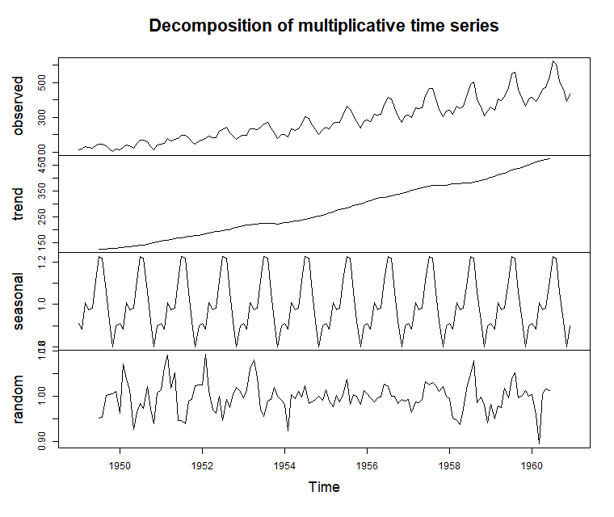
그림은 위에서부터 관측값(observed), 추세(trend), 계절(seasonal), 불규칙(random)이다. 제목의 multiplicative에서 승법 모형이라는 것을 읽는다. 파이썬의 Resid가 R에서는 random이다.
계절 성분의 값(d$figure)과 1949년의 추세(d$trend), 불규칙 성분(d$random)은 다음과 같다.
[1] 0.9102 0.8836 1.0074 0.9759 0.9814 1.1128 1.2266 1.2199 1.0605 0.9218
[11] 0.8012 0.8988
Jan Feb Mar Apr May Jun Jul Aug
1949 NA NA NA NA NA NA 126.7917 127.2500
Sep Oct Nov Dec
1949 127.9583 128.5833 129.0000 129.7500
Jan Feb Mar Apr May Jun Jul Aug Sep Oct
1949 NA NA NA NA NA NA 0.9517 0.9534 1.0022 1.0040
Nov Dec
1949 1.0063 1.0118| 묻는 것 | 읽는 자리 | 이 출력의 값 |
|---|---|---|
줄 맨 앞의 [1], [11] |
그 줄의 첫 값이 몇 번째 값인지를 알리는 표시 | 11번째 값이 0.8012(11월)다 |
| 계절 성분이 가장 큰 달 | 첫 표의 열두 값 가운데 가장 큰 것 | 7번째(7월), 1.2266 |
| 추세가 없는 달 | 둘째 표의 NA |
1949년 1~6월 |
| 1949년 7월의 추세와 불규칙 성분 | 둘째 표와 셋째 표의 Jul |
126.7917, 0.9517 |
중심 실습 단계 1의 파이썬 출력과 값이 모두 같다. 두 함수가 같은 고전적 분해를 하기 때문이다. 파이썬의 NaN을 R은 NA로 적는다.
6.4 출력의 해석 (2): acf()와 pacf()
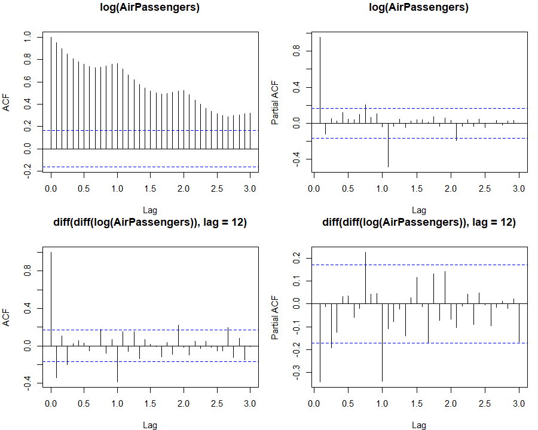
윗줄이 로그 변환만 한 시계열이고 아랫줄이 1차 차분과 계절 차분을 한 시계열이다. 왼쪽이 ACF, 오른쪽이 PACF(Partial ACF)다. 읽는 법은 3.3절과 같다. 아랫줄의 막대 높이를 숫자로 출력하면 다음과 같다(차례로 자료의 수, ACF, PACF, 한계).
[1] 131
[1] 1.000 -0.341 0.105 -0.202 0.021 0.056 0.031 -0.056 -0.001 0.176
[11] -0.076 0.064 -0.387
[1] -0.341 -0.013 -0.193 -0.125 0.033 0.035 -0.060 -0.020 0.226 0.043
[11] 0.047 -0.339
[1] 0.171ACF는 시차 0의 1.000부터 13개, PACF는 시차 1의 -0.341부터 12개다. 값은 단계 5의 파이썬 표와 같다. 그림의 모양에서 다른 곳은 셋이다.
| 다른 곳 | 파이썬 | R |
|---|---|---|
| 가로축의 단위 | 시차의 칸 수(0~36) | 월별 시계열 객체에서는 연 단위다. 1.0이 시차 12, 2.0이 시차 24다 |
| 0이 아니라고 보는 범위 | 색칠한 띠. ACF에서는 시차가 커질수록 넓어진다 | 파선 두 줄. ±1.96 ÷ √(자료의 수)로 일정하다. 아랫줄에서는 ±0.171이다 |
| 시차 0의 막대 | ACF와 PACF에 모두 그린다 | ACF에만 그린다. PACF는 시차 1부터 그린다 |
아랫줄의 ACF에서 띠 밖으로 뚜렷하게 나온 막대는 가로축의 0 바로 다음(시차 1)과 1.0(시차 12)에 있다. 단계 5의 -0.341과 -0.387이다.
6.5 출력의 해석 (3): arima()
로그 변환한 시계열에 계절 ARIMA 모형을 적합한 출력이다.
Call:
arima(x = log(AirPassengers), order = c(0, 1, 1), seasonal = c(0, 1, 1))
Coefficients:
ma1 sma1
-0.4018 -0.5569
s.e. 0.0896 0.0731
sigma^2 estimated as 0.001348: log likelihood = 244.7, aic = -483.4출력은 세 부분이다.
Call: 적합한 모형이다.order = c(0, 1, 1)은 차례로 p, d, q다. AR 항은 두지 않고(p = 0), 일반 차분을 한 번 하고(d = 1), MA(1)을 둔다(q = 1)는 뜻이다.seasonal = c(0, 1, 1)은 계절 주기(12개월)에 대한 차수이며, 계절 차분을 한 번 하고 계절 MA(1)을 둔다는 뜻이다. 중심 실습 단계 5에서diff12의 ACF를 보고 짐작한 모형이다.Coefficients: 계수의 표다. 첫 줄이 추정값이고s.e.줄이 표준 오차다.ma1은 MA의 첫째 계수,sma1은 계절 MA의 첫째 계수다. AR 항이 있는 모형에서는ar1,ar2와 같은 이름의 열이 생긴다. 차분을 한 모형에서는 상수(intercept)를 두지 않는다.- 맨 아래 줄: 모형 전체에 관한 값이다.
| 묻는 것 | 읽는 자리 | 이 출력의 값 |
|---|---|---|
| 차분의 횟수 | order의 가운데 값, seasonal의 가운데 값 |
일반 차분 1번, 계절 차분 1번 |
| 계수의 추정값 | Coefficients의 첫 줄 |
ma1 = -0.4018, sma1 = -0.5569 |
| 계수의 표준 오차 | s.e. 줄 |
0.0896, 0.0731 |
| 계수가 유의한가 | 추정값 ÷ 표준 오차 | -0.4018 ÷ 0.0896 ≈ -4.48, -0.5569 ÷ 0.0731 ≈ -7.62. 절댓값이 1.96보다 훨씬 크므로 둘 다 유의하다 |
| 오차의 분산 | sigma^2 estimated as |
0.001348 |
| 로그 가능도 | log likelihood |
244.7. 클수록 모형이 자료에 잘 맞는다 |
| 모형을 견주는 기준 | aic |
-483.4. 작을수록 좋은 모형이다 |
중심 실습 단계 6([선택])의 파이썬 출력과 이름이 다르므로 다음과 같이 짝짓는다.
| 뜻 | R arima() |
파이썬 statsmodels ARIMA |
|---|---|---|
| MA(1)의 계수 | ma1 |
ma.L1 |
| 계절 MA(1)의 계수 | sma1 |
ma.S.L12 |
| AR(1)의 계수 | ar1 |
ar.L1 |
| 표준 오차 | s.e. 줄 |
bse, 또는 결과표의 std err 열 |
| 오차의 분산 | sigma^2 estimated as |
sigma2 |
| 모형의 비교 기준 | aic |
aic |
같은 모형에서 R은 ma1 = -0.4018, sma1 = -0.5569, 파이썬은 ma.L1 = -0.4019, ma.S.L12 = -0.5574를 냈고, AIC는 둘 다 -483.4였다. 계수가 넷째 자리에서 다른 것은 두 프로그램의 계산 세부가 다르기 때문이며, 시험은 R의 출력을 그대로 읽게 한다.
arima()의 출력에는 summary(lm())과 달리 t 값과 유의 확률의 열이 없다. 따라 하기 4의 파이썬 표가 z 열에 적은 값을 손으로 계산하는 것이다. R의 문서는 표준 오차를 로그 가능도의 곡률에서 구한 대략의 값이라고 적으므로, 이 판단도 대략의 것이다.
AIC는 로그 가능도에 모수의 수만큼 벌점을 준 값이다(7장 3.6절). 이 출력에서는 -2 × 244.7 + 2 × 3 = -483.4다. 3은 계수 둘과 오차의 분산 하나를 센 것이다. AIC는 음수여도 되며, 같은 자료에 같은 차분을 한 모형끼리 크기를 견주는 데 쓴다.
7. 자주 하는 실수와 오해
| 증상 또는 오해 | 원인 | 바로잡기 |
|---|---|---|
| 정상성을 “정상적인 상태”나 정규 분포로 이해한다 | 낱말이 같아 회귀 모형의 가정과 섞었다 | 성질이 시점에 따라 변하지 않는다는 뜻이다. 세 조건으로 확인한다(1.2절) |
| 추세가 있으면 로그 변환을 한다고 답한다 | 변환과 차분의 짝을 바꾸었다 | 평균에는 차분, 분산에는 변환이다. 로그 변환 뒤에도 평균은 4.836에서 6.154로 커진다(단계 2) |
| 계절 성분과 순환 성분을 같은 것으로 본다 | 둘 다 되풀이되는 변동이다 | 주기가 고정되어 있으면 계절, 일정하지 않으면 순환이다(2.1절) |
| 이동평균법과 이동평균 모형을 같은 것으로 본다 | 이름이 같다 | 관측값의 평균을 내는 계산과 오차의 결합으로 설명하는 모형의 차이다(2.4절, 4.2절) |
| AR은 ACF가 끊기고 MA는 PACF가 끊긴다고 거꾸로 외운다 | 두 표의 칸을 바꾸었다 | AR의 차수는 PACF에서, MA의 차수는 ACF에서 읽는다(따라 하기 4) |
| ARIMA(p, d, q)의 가운데 값을 계절 주기로 읽는다 | 표기의 자리를 몰랐다 | d는 차분의 횟수다. 계절 주기는 seasonal에 따로 적는다 |
| 차분을 많이 할수록 좋다고 생각한다 | 정상성을 만들려는 목적을 놓쳤다 | 정상 시계열이 되면 멈춘다. 2차 차분을 넘는 일은 거의 없다 |
R의 자기상관 그림에서 가로축의 1.0을 시차 1로 읽는다 |
월별 시계열 객체의 가로축은 연 단위다 | 1.0이 시차 12다(6.4절) |
| 띠 밖으로 조금 나온 막대 하나마다 모형을 바꾼다 | 띠가 유의수준 0.05의 범위라는 것을 잊었다 | 스무 개 가운데 하나쯤은 우연히 나올 수 있다. 뚜렷한 막대와 계절 주기의 막대를 먼저 본다 |
arima() 출력에 유의 확률이 없어 계수의 유의성을 판단할 수 없다고 답한다 |
summary(lm())과 모양이 다르다 |
추정값 ÷ 표준 오차의 절댓값이 1.96(대략 2)보다 큰지 본다(4.5절, 6.5절) |
| 융-박스 검정의 유의 확률이 크면 모형이 나쁘다고 읽는다 | 유의 확률이 작아야 “의미 있는 결과”라고 외웠다 | 귀무 가설이 “잔차가 백색잡음”이므로 유의 확률이 0.05보다 커야 진단을 통과한다(4.5절) |
| 원계열의 이번 달 값이 지난달보다 줄었으므로 경기가 나빠졌다고 판단한다 | 계절의 몫을 걷어 내지 않았다 | 계절조정 계열로 전월과 견주거나, 원계열은 작년 같은 달과 견준다(단계 1의 1949년 10월과 11월) |
| 그림의 막대 모양만으로 ARMA의 p와 q를 정하려 한다 | 4.4절의 표를 ARMA에도 그대로 쓰려 하였다 | p와 q가 모두 0보다 크면 그림은 차수를 정하지 못한다. 후보를 적합하여 AIC로 견준다(따라 하기 4) |
8. 연습 문제
계산, 출력 해석, 판단의 근거를 문장으로 쓰는 서술형 연습이다. 주간 문항 세트(객관식)와 겹치지 않게 골랐다. 정답과 채점 기준은 교수가 수업에서 확인한다.
연습 1. 자기상관 그림으로 모형 고르기. 다음 그림은 정상 시계열 세 개(A, B, C, 각 300개)의 ACF(왼쪽)와 PACF(오른쪽)다. 색칠한 띠가 0이 아니라고 보는 범위의 경계다.
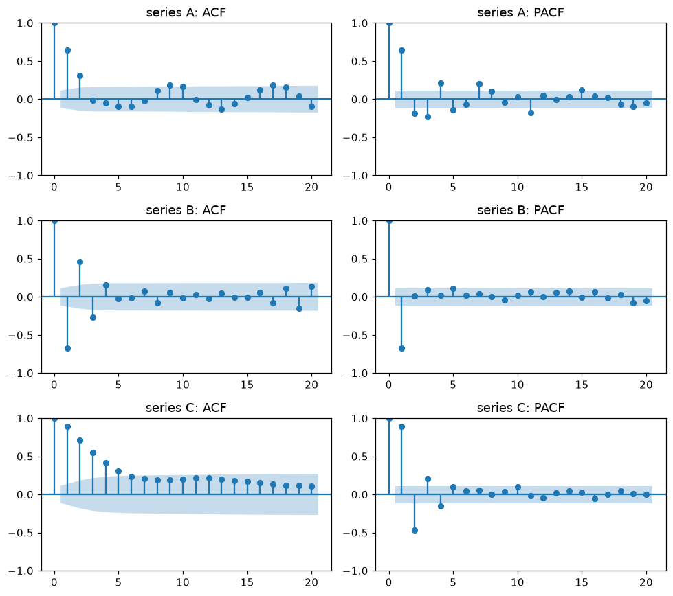
- 시계열마다 AR(p), MA(q), ARMA(p, q) 가운데 가장 적절한 모형을 고르고, p나 q의 값을 정할 수 있으면 함께 쓴다.
- 고른 근거를 시계열마다 두 문장 이내로 쓴다. 한 문장은 ACF, 한 문장은 PACF에 관한 것이어야 한다.
- 시계열 B의 ACF는 막대의 부호가 번갈아 바뀐다. 이 모양이 4.4절의 “서서히 줄어든다”에 해당하는 까닭을 쓴다.
- 세 시계열 가운데 그림만으로 차수를 정하기 가장 어려운 것은 무엇인가. 그 시계열의 차수를 정하려면 무엇을 더 해야 하는지 따라 하기 4의 절차로 쓴다.
연습 2. 차분과 지수평활의 계산. 어느 매장의 분기별 판매량이 2년 동안 차례로 40, 52, 47, 61, 44, 57, 50, 66이었다.
- 1차 차분을 구한다. 1차 차분한 값을 한 번 더 차분한 2차 차분도 구한다. 각각 값이 몇 개 남는지 적는다.
- 계절 차분(시차 4)을 구한다. 계절 차분한 값이 거의 일정하다면 이 시계열에 무엇이 남아 있다고 볼 수 있는가.
- 평활 상수 0.3으로 단순 지수평활을 한다. 첫 평활값은 첫 관측값(40)으로 둔다. 둘째와 셋째 분기의 평활값을 계산 과정과 함께 쓴다.
- 평활 상수를 0.9로 바꾸면 셋째 분기의 평활값은 관측값 47에 더 가까워지는가, 멀어지는가. 계산하지 않고 2.4절의 식으로 근거를 쓴다.
연습 3. 두 모형의 견줌. 다음은 로그 변환한 AirPassengers에 두 계절 ARIMA 모형을 적합한 R 출력이다.
Call:
arima(x = log(AirPassengers), order = c(1, 1, 0), seasonal = c(1, 1, 0))
Coefficients:
ar1 sar1
-0.3745 -0.4637
s.e. 0.0808 0.0808
sigma^2 estimated as 0.001457: log likelihood = 240.41, aic = -474.82Call:
arima(x = log(AirPassengers), order = c(0, 1, 1), seasonal = c(0, 1, 1))
Coefficients:
ma1 sma1
-0.4018 -0.5569
s.e. 0.0896 0.0731
sigma^2 estimated as 0.001348: log likelihood = 244.7, aic = -483.4- 두 모형의 차이를 p, d, q와 계절 차수의 말로 쓴다.
- 첫째 모형의 두 계수가 유의한지 추정값 ÷ 표준 오차로 판단한다.
- AIC로 두 모형 가운데 하나를 고르고, 이 견줌이 의미가 있는 조건(차분)을 함께 쓴다.
- 고른 모형이 중심 실습 단계 5에서
diff12의 ACF와 PACF를 보고 한 판단과 맞는지 쓴다.
연습 4. 계절조정 계열의 판단. 중심 실습 단계 1의 승법 모형에서 계절 성분은 7월 1.2266, 8월 1.2199, 9월 1.0605, 10월 0.9218, 11월 0.8012였다. 1958년의 관측값은 7월 491, 8월 505, 9월 404, 10월 359, 11월 310이었다.
- 1958년 7~11월의 계절조정 값을 소수 첫째 자리까지 계산한다.
- 관측값으로 보면 8월에서 9월로 승객이 몇 % 줄었는가. 계절조정 값으로 보면 몇 % 줄었는가.
- 어느 항공사 직원이 “1958년 11월은 10월보다 승객이 49천 명 줄어 수요가 크게 꺾였다”고 보고하였다. 계절조정 값을 근거로 이 보고를 고쳐 쓴다.
- 국가통계포털의 월별 지표에서 원계열은 전년동월비로, 계절조정 계열은 전월비로 견주는 까닭을 이 연습의 결과로 설명한다.
9. 정리
| 주제 | 기억할 것 |
|---|---|
| 시계열 자료 | 시간의 순서대로 관측한 자료. 순서가 정보이며 가까운 시점의 값끼리 닮는다 |
| 정상성 | 평균이 일정하다, 분산이 일정하다, 공분산이 시점이 아니라 시차에만 의존한다 |
| 정상 시계열로의 변환 | 평균이 일정하지 않으면 차분, 분산이 일정하지 않으면 변환(로그). 변환을 먼저 한다 |
| 차분 | 일반 차분은 바로 앞 시점의 값을 빼어 추세를 없앤다. 계절 차분은 한 주기 앞의 값을 빼어 계절성을 없앤다 |
| 백색잡음 | 평균 0, 분산 일정, 자기상관 없음. 모형의 오차항이며, 잘 적합된 모형의 잔차가 따라야 할 모양이다 |
| 분해 시계열 | 추세, 계절, 순환, 불규칙. 계절은 주기가 고정되어 있고 순환은 그렇지 않다. 순환은 흔히 추세에 묶는다 |
| 가법 모형과 승법 모형 | 가법은 성분의 합, 승법은 성분의 곱. 계절 변동의 폭이 수준에 비례하면 승법 모형이다. 로그를 씌우면 승법이 가법이 된다 |
| 고전적 분해 | 중심화 이동평균으로 추세를 구하고, 같은 달끼리 평균하여 계절 성분을 구한다. 처음과 끝의 여섯 달은 추세가 없다 |
| 이동평균법과 지수평활법 | 이동평균법은 일정 기간의 값에 같은 가중치를 준다. 지수평활법은 모든 과거 값을 쓰고 최근의 값에 큰 가중치를 준다 |
| ACF와 PACF | ACF는 시차 k만큼 떨어진 값 사이의 상관. PACF는 사이에 낀 값들의 영향을 없앤 상관 |
| 자기상관 그림과 정상성 | ACF가 아주 천천히 줄어들면 비정상 시계열이다. 빠르게 0에 가까워지면 정상 시계열로 본다 |
| AR(p) | 과거 p 시점의 값으로 설명한다. ACF는 서서히 줄고 PACF는 p 시차 뒤에 끊긴다 |
| MA(q) | 과거 q 시점의 오차로 설명한다. ACF는 q 시차 뒤에 끊기고 PACF는 서서히 준다. 언제나 정상성을 만족한다 |
| ARMA(p, q) | AR과 MA를 합친 모형. ACF와 PACF가 모두 서서히 준다 |
| ARIMA(p, d, q) | d번 차분하면 ARMA(p, q)를 따른다. d는 차분의 횟수다 |
arima() 출력 |
계수와 s.e., sigma^2, log likelihood, aic. 추정값 ÷ 표준 오차로 유의성을, AIC로 모형을 견준다 |
| 모형의 식별과 선택 | 끊기는 그림이 있으면 그 그림에서 차수를 읽는다. 둘 다 서서히 줄면 ARMA로 보고 후보를 AIC로 견준다. AIC는 같은 차분을 한 모형끼리만 견준다 |
| 융-박스 검정 | 귀무 가설은 “잔차가 백색잡음이다”. 유의 확률이 0.05보다 크면 진단을 통과한다. 월별 자료는 시차 24까지 본다 |
| 계절조정 계열 | 승법 모형이면 관측값 ÷ 계절 성분. 공공 통계는 원계열과 함께 공표하며, 계절조정 계열은 전월과, 원계열은 전년 같은 달과 견준다 |
10. 참고 자료
| 자료 | 주소 | 확인일 | 쓴 곳 |
|---|---|---|---|
| R. J. Hyndman, G. Athanasopoulos, Forecasting: Principles and Practice(3판), 2.3절 Time series patterns | https://otexts.com/fpp3/tspatterns.html | 2026-11-14 | 2.1절 |
| 같은 책, 3.2절 Time series components | https://otexts.com/fpp3/components.html | 2026-11-14 | 2.2절 |
| 같은 책, 3.4절 Classical decomposition | https://otexts.com/fpp3/classical-decomposition.html | 2026-11-14 | 2.3절 |
| 같은 책, 8.1절 Simple exponential smoothing | https://otexts.com/fpp3/ses.html | 2026-11-14 | 2.4절 |
| 같은 책, 8.1절 Simple exponential smoothing의 Optimisation 소절(다시 확인) | https://otexts.com/fpp3/ses.html | 2026-11-15 | 2.4절(평활 상수의 추정) |
| 같은 책, 9.1절 Stationarity and differencing의 그림 9.1(정상성 판단의 예)(다시 확인) | https://otexts.com/fpp3/stationarity.html | 2026-11-15 | 1.2절의 판단 연습 표 |
| 같은 책, 9.1절 Stationarity and differencing | https://otexts.com/fpp3/stationarity.html | 2026-11-14 | 1.2절, 1.3절, 3.3절 |
| 같은 책, 9.4절 Moving average models | https://otexts.com/fpp3/MA.html | 2026-11-14 | 2.4절, 4.2절 |
| 같은 책, 9.5절 Non-seasonal ARIMA models | https://otexts.com/fpp3/non-seasonal-arima.html | 2026-11-14 | 3.2절, 4.4절 |
| NIST/SEMATECH e-Handbook, 6.4.4.2 Stationarity | https://www.itl.nist.gov/div898/handbook/pmc/section4/pmc442.htm | 2026-11-14 | 1.2절, 1.3절 |
| NIST/SEMATECH e-Handbook, 6.4.4.6 Box-Jenkins Model Identification | https://www.itl.nist.gov/div898/handbook/pmc/section4/pmc446.htm | 2026-11-14 | 3.3절, 4.4절, 4.5절 |
R Manual, Classical Seasonal Decomposition by Moving Averages(decompose) |
https://stat.ethz.ch/R-manual/R-devel/library/stats/html/decompose.html | 2026-11-14 | 2.3절, 6.3절 |
R Manual, ARIMA Modelling of Time Series(arima) |
https://stat.ethz.ch/R-manual/R-devel/library/stats/html/arima.html | 2026-11-14 | 6.5절 |
R Manual, Plotting Autocovariance and Autocorrelation Functions(plot.acf) |
https://stat.ethz.ch/R-manual/R-devel/library/stats/html/plot.acf.html | 2026-11-14 | 3.3절, 6.4절 |
statsmodels, plot_acf |
https://www.statsmodels.org/stable/generated/statsmodels.graphics.tsaplots.plot_acf.html | 2026-11-14 | 3.3절 |
| FPP3, 3.2절 Time series components(계절조정 계열) | https://otexts.com/fpp3/components.html | 2026-11-15 | 2절의 배경과 쓰임 |
| FPP3, 3.5절 Methods used by official statistics agencies(X-11, SEATS, X-13ARIMA-SEATS) | https://otexts.com/fpp3/methods-used-by-official-statistics-agencies.html | 2026-11-15 | 1절, 4절의 배경과 쓰임 |
| FPP3, 5.4절 Residual diagnostics(융-박스 검정, 시차의 선택) | https://otexts.com/fpp3/diagnostics.html | 2026-11-15 | 4.5절, 단계 6 |
| FPP3, 9.5절 Non-seasonal ARIMA models(ACF·PACF에 의한 p, q의 결정과 그 한계)(다시 확인) | https://otexts.com/fpp3/non-seasonal-arima.html | 2026-11-15 | 4.4절, 따라 하기 4 |
| FPP3, 9.6절 Estimation and order selection(AIC는 같은 차분의 모형끼리) | https://otexts.com/fpp3/arima-estimation.html | 2026-11-15 | 따라 하기 4 |
| FPP3, 9.9절 Seasonal ARIMA models(계절 시차의 ACF·PACF) | https://otexts.com/fpp3/seasonal-arima.html | 2026-11-15 | 단계 5, 단계 6 |
statsmodels, acorr_ljungbox(문서 판 0.15.0) |
https://www.statsmodels.org/stable/generated/statsmodels.stats.diagnostic.acorr_ljungbox.html | 2026-11-15 | 따라 하기 4, 단계 6 |
| e-나라지표, 전산업생산지수 지표 설명(계절조정 방법 「X-13-ARIMA-SEATS」, 원지수의 전년동월비) | https://www.index.go.kr/unify/idx-info.do?idxCd=2838 | 2026-11-15 | 1절의 배경과 쓰임 |
| 국가통계포털(KOSIS) | https://kosis.kr | 2026-11-15 | 1절의 최신 자료 자리 |
마무리와 다음 장 안내
이 장은 8장의 “그림을 보고 판단하되 숫자로 확인한다”는 방식을 되짚고 항공 승객 자료를 여는 데서 시작하였다(0절). 정상성과 백색잡음(1절), 분해와 평활(2절), 차분과 자기상관 함수(3절), AR·MA·ARMA·ARIMA 모형(4절)을 짧은 수열과 모의 시계열로 확인하였고, 공공 통계가 원계열과 계절조정 계열을 함께 공표하는 까닭을 배경으로 보았다. 중심 실습에서는 승객 수를 분해하여 계절조정 계열을 만들고, 로그 변환, 1차 차분, 계절 차분으로 정상 시계열에 가까운 꼴을 얻은 뒤, 자기상관 그림에서 계절 MA 모형을 골랐다(5절). 끝으로 같은 분석의 R 그림과 arima() 출력을 읽었다(6절).
기억할 것은 셋이다.
- 짝을 고정한다. 평균에는 차분, 분산에는 변환. 일반 차분은 추세, 계절 차분은 계절성. AR의 차수는 PACF에서, MA의 차수는 ACF에서.
- 그림으로 짐작하고 숫자로 정한다. 막대가 띠 밖인지는 한계 값으로, ARMA의 차수는 AIC로, 모형이 충분한지는 융-박스 검정으로 정한다.
- 계절의 몫을 걷어 내고 견준다. 계절이 있는 자료의 증감은 계절조정 계열의 전월비나 원계열의 전년동월비로 말한다.
다음 장은 10장 「분류 분석 (1): 데이터 분할, 로지스틱 회귀, 의사결정나무」다. 통계분석(교재 06~09)을 마치고 정형 데이터 마이닝으로 넘어간다. 이 장에서 쓴 생각 가운데 둘이 이어진다. 하나는 모형을 고를 때 AIC처럼 “맞는 정도와 복잡함을 함께 본다”는 것이다. 10장은 같은 생각을 훈련용 자료와 검증용 자료의 성능 차이(과대적합)로 다룬다. 다른 하나는 모형을 만든 자료와 확인하는 자료를 구분한다는 것이다. 이 장에서는 잔차의 진단으로 모형을 확인하였고, 10장에서는 자료를 나누어 처음 보는 자료에서의 성능으로 확인한다.
주간 문항 세트 09
20문항이다. 1~10번은 수업에서 풀고 11~20번은 과제로 푼다. 1~15번은 이 장의 문항이고 16~20번은 앞 장의 복습이다. 실전의 문항당 시간으로는 36분이 걸린다. 정답과 풀이는 교수가 수업에서 확인한다.
문항 1. 시계열의 정상성(약한 의미의 정상성)의 조건으로 가장 적절하지 않은 것은?
- ① 평균이 시점에 관계없이 일정하다.
- ② 분산이 시점에 관계없이 일정하다.
- ③ 두 시점의 값 사이의 공분산은 두 시점의 시차에만 의존한다.
- ④ 두 시점의 값 사이의 공분산은 시차와 관계없이 관측한 시점에만 의존한다.
범위: 데이터분석 > 통계분석 > 시계열 예측 유형: 옳지 않은 것 고르기 장: 9
문항 2. 어느 매장의 주별 매출 시계열을 그렸더니 평균 수준은 처음부터 끝까지 비슷했으나 시간이 지날수록 오르내리는 폭이 점점 커졌다. 이 시계열을 정상 시계열에 가깝게 바꾸려고 할 때 가장 적절한 방법은?
- ① 일반 차분
- ② 계절 차분
- ③ 로그 변환
- ④ 3주 이동평균
범위: 데이터분석 > 통계분석 > 시계열 예측 유형: 사례 판단 장: 9
문항 3. 어느 상품의 분기별 판매량이 2년 동안 차례로 10, 14, 20, 12, 13, 18, 25, 14였다. 이 시계열에 계절 차분(시차 4)을 한 번 한 결과는?
- ① 4, 6, -8, 1, 5, 7, -11
- ② 3, 4, 5, 2
- ③ -3, -4, -5, -2
- ④ 23, 32, 45, 26
범위: 데이터분석 > 통계분석 > 시계열 예측 유형: 계산 장: 9
문항 4. 어느 놀이공원의 월별 입장객 수는 해마다 늘고 있으며, 성수기와 비수기의 입장객 수 차이도 전체 입장객 수가 늘어남에 따라 함께 커지고 있다. 이 시계열의 분해에 대한 설명으로 가장 적절한 것은?
- ① 수준이 높아질수록 계절 변동의 폭이 커지므로 승법 모형이 맞다.
- ② 추세가 있는 시계열은 가법 모형으로만 분해할 수 있다.
- ③ 승법 모형으로 분해하면 계절 성분이 입장객 수와 같은 단위(명)로 나온다.
- ④ 가법 모형은 관측값을 추세, 계절, 불규칙 성분의 곱으로 나타낸다.
범위: 데이터분석 > 통계분석 > 시계열 예측 유형: 사례 판단 장: 9
문항 5. 백색잡음에 대한 설명으로 가장 적절하지 않은 것은?
- ① 평균이 0이고 분산이 일정하다.
- ② 서로 다른 시점의 값 사이에 상관이 없다.
- ③ 뚜렷한 추세와 계절성을 가진 비정상 시계열이다.
- ④ 시계열 모형이 잘 적합되었다면 잔차는 백색잡음에 가깝다.
범위: 데이터분석 > 통계분석 > 시계열 예측 유형: 옳지 않은 것 고르기 장: 9
문항 6. 자기상관 함수(ACF)와 부분자기상관 함수(PACF)에 대한 설명으로 가장 적절한 것은?
- ① ACF는 서로 다른 두 시계열 사이의 상관 계수를 시차별로 구한 것이다.
- ② PACF는 시차 k만큼 떨어진 두 값 사이에 낀 값들의 영향을 없앤 뒤의 상관을 나타낸다.
- ③ 시차 0의 자기상관은 언제나 0이다.
- ④ 추세가 있는 시계열의 ACF는 시차 1 뒤에 곧바로 0에 가까워진다.
범위: 데이터분석 > 통계분석 > 시계열 예측 유형: 용어 구분 장: 9
문항 7. 자기회귀 모형과 이동평균 모형에 대한 설명으로 가장 적절하지 않은 것은?
- ① AR(p) 모형은 현재의 값을 과거 p 시점의 값으로 설명한다.
- ② MA(q) 모형은 현재의 값을 현재와 과거 q 시점의 오차로 설명한다.
- ③ MA 모형은 계수의 값에 관계없이 정상성을 만족한다.
- ④ AR(p) 모형의 ACF는 p 시차 뒤에 끊긴다.
범위: 데이터분석 > 통계분석 > 시계열 예측 유형: 옳지 않은 것 고르기 장: 9
문항 8. ARIMA(2, 1, 0) 모형에 대한 설명으로 가장 적절한 것은?
- ① 두 번 차분하면 AR(1) 모형을 따른다.
- ② 한 번 차분하면 AR(2) 모형을 따른다.
- ③ 한 번 차분하면 MA(2) 모형을 따른다.
- ④ 차분하지 않아도 정상성을 만족하는 ARMA(2, 1) 모형이다.
범위: 데이터분석 > 통계분석 > 시계열 예측 유형: 용어 구분 장: 9
문항 9. 어느 정상 시계열의 자기상관 그림을 그렸더니, ACF는 시차 2까지 막대가 띠 밖으로 나오고 시차 3부터는 모두 띠 안에 있었다. PACF는 시차가 커짐에 따라 서서히 줄어들었다. 이 시계열에 가장 적절한 모형은?
- ① MA(2)
- ② AR(2)
- ③ ARMA(2, 2)
- ④ 백색잡음
범위: 데이터분석 > 통계분석 > 시계열 예측 유형: 사례 판단 장: 9
문항 10. 다음은 어느 정상 시계열(관측값 300개)의 자기상관 함수(ACF)와 부분자기상관 함수(PACF)를 R로 그린 그림이다. 이 시계열에 가장 적절한 모형은?
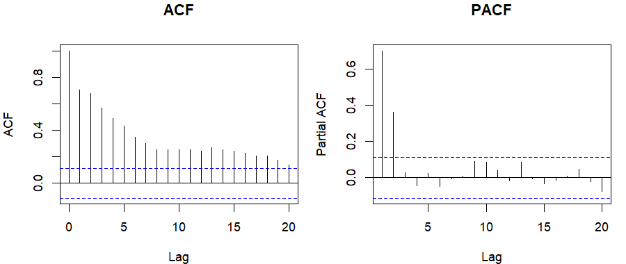
- ① MA(1)
- ② MA(2)
- ③ AR(1)
- ④ AR(2)
범위: 데이터분석 > 통계분석 > 시계열 예측 유형: 출력 해석 장: 9
문항 11. 다음은 한 사람의 혈중 호르몬 농도를 10분 간격으로 48번 잰 시계열(lh)에 모형을 적합한 R 출력이다. 이에 대한 설명으로 가장 적절하지 않은 것은?
Call:
arima(x = lh, order = c(1, 0, 0))
Coefficients:
ar1 intercept
0.5739 2.4133
s.e. 0.1161 0.1466
sigma^2 estimated as 0.1975: log likelihood = -29.38, aic = 64.76- ① 적합한 모형은 차분을 하지 않은 AR(1) 모형이다.
- ② 한 시점 전의 값에 곱하는 자기회귀 계수의 추정값은 0.5739다.
- ③ 자기회귀 계수의 표준 오차는 0.1466이다.
- ④ 오차의 분산은 0.1975로 추정되었다.
범위: 데이터분석 > 통계분석 > 시계열 예측 유형: 출력 해석 장: 9
문항 12. 다음은 나일강의 연간 유량 시계열(Nile)에 세 모형을 적합한 R 출력에서 모형과 맨 아래 줄만 옮긴 것이다. AIC를 기준으로 모형을 고를 때 가장 적절한 것은?
arima(x = Nile, order = c(1, 1, 0))
...
sigma^2 estimated as 23488: log likelihood = -638.74, aic = 1281.48
arima(x = Nile, order = c(0, 1, 1))
...
sigma^2 estimated as 20600: log likelihood = -632.55, aic = 1269.09
arima(x = Nile, order = c(1, 1, 1))
...
sigma^2 estimated as 19769: log likelihood = -630.63, aic = 1267.25- ① AIC가 가장 큰 ARIMA(1, 1, 0)을 고른다.
- ② AIC가 가장 작은 ARIMA(1, 1, 1)을 고른다.
- ③ 로그 가능도가 가장 작은 ARIMA(1, 1, 0)을 고른다.
- ④ 세 모형의 차분 횟수가 같으므로 AIC로는 견줄 수 없다.
범위: 데이터분석 > 통계분석 > 시계열 예측 유형: 출력 해석 장: 9
문항 13. 어느 지역의 분기별 건설 수주액 시계열에, 경기의 호황과 불황에 따라 몇 해에 걸쳐 오르내리는 변동이 나타났다. 이 변동은 되풀이되기는 하지만 주기가 일정하지 않다. 분해 시계열에서 이 변동에 해당하는 성분은?
- ① 순환 성분
- ② 계절 성분
- ③ 추세 성분
- ④ 불규칙 성분
범위: 데이터분석 > 통계분석 > 시계열 예측 유형: 사례 판단 장: 9
문항 14. 로그 변환한 월별 시계열의 자기상관 그림에서 ACF가 시차 1에서 0.95이고 시차 36까지 아주 천천히 줄어들었다. 이에 대한 판단으로 가장 적절한 것은?
- ① 추세가 남아 있는 비정상 시계열로 보고 차분을 한다.
- ② 정상 시계열이므로 바로 ARMA 모형을 적합한다.
- ③ 백색잡음이므로 더 분석할 것이 없다.
- ④ ACF가 시차 1 뒤에 끊겼으므로 MA(1) 모형으로 본다.
범위: 데이터분석 > 통계분석 > 시계열 예측 유형: 사례 판단 장: 9
문항 15. 이동평균법과 지수평활법에 대한 설명으로 가장 적절한 것은?
- ① 이동평균법은 평균을 내는 기간 안에서 최근의 값일수록 큰 가중치를 준다.
- ② 지수평활법은 최근 몇 개의 값만 쓰고 그 값들에 같은 가중치를 준다.
- ③ 지수평활법은 과거로 갈수록 가중치가 지수적으로 작아진다.
- ④ 이동평균법에서 평균을 내는 기간을 길게 잡을수록 최근의 변화에 민감하게 반응한다.
범위: 데이터분석 > 통계분석 > 시계열 예측 유형: 용어 구분 장: 9
문항 16. 도서관의 대출 데이터베이스는 책을 빌리고 반납할 때마다 내용이 바뀌면서도 현재의 정확한 대출 상태를 유지한다. 이 설명에 해당하는 데이터베이스의 특징은?
- ① 통합된 데이터
- ② 저장된 데이터
- ③ 공용 데이터
- ④ 변화되는 데이터
범위: 데이터 이해 > 데이터의 이해 > 데이터베이스의 정의와 특징 유형: 사례 판단 장: 1
문항 17. 사용자의 요구를 처음부터 분명히 알기 어려운 분석 과제에서, 일부분을 먼저 만들어 사용자에게 보이고 써 본 결과를 반영하여 고쳐 나가는 방법론의 모델은?
- ① 폭포수 모델
- ② 나선형 모델
- ③ 프로토타입 모델
- ④ 상향식 접근
범위: 데이터분석 기획 > 데이터분석 기획의 이해 > 분석 방법론 유형: 용어 구분 장: 2
문항 18. 분석 조직의 구조에 대한 설명으로 가장 적절한 것은?
- ① 분산 구조는 분석 전담 조직의 인력을 현업 부서에 배치하여 분석 결과를 현업에 신속하게 적용한다.
- ② 기능 구조는 별도의 분석 전담 조직이 전사의 분석 업무를 맡는다.
- ③ 집중 구조는 분석 전담 조직 없이 각 업무 부서가 자기 부서의 분석을 직접 한다.
- ④ 기능 구조는 전사 관점의 핵심 분석을 하기에 가장 유리하다.
범위: 데이터분석 기획 > 분석 마스터 플랜 > 분석 거버넌스 체계 수립 유형: 용어 구분 장: 3
문항 19. 모표준편차가 20인 모집단에서 크기가 100인 표본을 뽑는다. 중심극한정리에 따를 때 표본 평균의 표준편차(표준 오차)는?
- ① 0.2
- ② 2
- ③ 10
- ④ 20
범위: 데이터분석 > 통계분석 > 통계학 개론 유형: 계산 장: 6
문항 20. 다차원 척도법에 대한 설명으로 가장 적절하지 않은 것은?
- ① 개체 사이의 거리나 비유사성으로 개체를 낮은 차원의 점으로 나타낸다.
- ② 비유사성의 순서만 있는 서열 척도의 자료에는 비계량적 다차원 척도법을 쓴다.
- ③ 스트레스 값은 작을수록 적합도가 좋다.
- ④ 그림의 가로축과 세로축의 방향은 원래 변수의 단위로 정해지므로 뒤집으면 다른 결과가 된다.
범위: 데이터분석 > 통계분석 > 다변량 분석 유형: 옳지 않은 것 고르기 장: 8